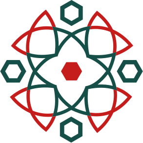

الدليل الإعلامي الموحّد لتغطية الفعاليات والأنشطة الطلابية
الوثيقة المرجعية الشاملة لإجراءات التخطيط، والإنتاج، والتصميم، والنشر، والأرشفة، والحوكمة، وضبط جودة العمل الإعلامي الطلابي.
فهرس أبواب ومحتويات الدليل الموحد
تصفح بالتابات التفاعليةيُعد العمل الإعلامي أحد المكونات الأساسية في توثيق أنشطة اتحاد الطلبة بجامعة حمص، وإبراز جهوده ومبادراته، ونقل صورة دقيقة ومهنية عن فعالياته ومواقفه وخدماته المقدمة للطلاب.
ولا تقتصر التغطية الإعلامية الناجحة على التقاط الصور أو تسجيل الفيديوهات، بل تقوم على منظومة متكاملة تبدأ بالتخطيط المسبق، وفهم طبيعة الفعالية وأهدافها، وتحديد الاحتياجات، وتوزيع الأدوار، وتنفيذ التغطية ميدانياً، ثم إنتاج المواد الإعلامية ومراجعتها واعتمادها ونشرها وأرشفتها وتقييم نتائجها.
وانطلاقاً من أهمية توحيد آليات العمل بين القسم الإعلامي المركزي والمكاتب الإعلامية في الهيئات والمعاهد، يأتي هذا الدليل لوضع مرجعية مشتركة تنظم مراحل الإنتاج الإعلامي، وتحدد المسؤوليات، وتوضح المعايير المهنية والفنية، وتقلل الأخطاء والتكرار، وتساعد على الاستفادة المثلى من الموارد البشرية والتقنية المتاحة.
كما يهدف الدليل إلى تحقيق التوازن بين الالتزام بالهوية المؤسسية لاتحاد الطلبة، والمحافظة على الطابع الإنساني والعفوي للحياة الجامعية، وتقديم محتوى يعكس واقع الفعاليات والأنشطة بصورة مهنية وجذابة.
أن يكون القسم الإعلامي في اتحاد الطلبة بجامعة حمص نموذجاً طلابياً رائداً وموثوقاً في التوثيق وصناعة المحتوى الجامعي المهني الذي يواكب تطلعات الطلاب ويعكس نبض الجامعة.
إبراز أنشطة وإنجازات ومبادرات اتحاد الطلبة وخدمة المجتمع الجامعي بمحتوى إبداعي ودقيق، يلتزم بالهوية المؤسسية الوطنية والأخلاقيات الإعلامية، ويوفر بيئة تدريبية تصقل مواهب الكوادر الطلابية.
-
1
توحيد إجراءات التغطية الإعلامية للفعاليات والأنشطة الطلابية عبر كافة الكليات والمعاهد.
-
2
تحديد المعايير الفنية للتصوير الفوتوغرافي وتصوير الفيديو والتصميم والمونتاج.
-
3
تنظيم مواقع تموضع المصورين وحركتهم التكتيكية داخل أماكن الفعاليات دون إعاقة الحضور.
-
4
وضع ضوابط واضحة لتصميم المواد البصرية ومونتاج الفيديوهات بما يطابق الهوية البصرية الرسمية.
-
5
تنظيم إجراء المقابلات والتصريحات والتسجيلات الصوتية بأسلوب صحفي متزن.
-
6
تحديد مراحل العمل بدقة: ما قبل الفعالية، أثنائها، وبعد انتهائها.
-
7
توضيح الأدوار والمسؤوليات وآليات التنسيق بين أعضاء الفريق المركزي والمكاتب الفرعية.
-
8
ضبط جودة المواد الإعلامية وفق قوائم تحقق دقيقة قبل اعتمادها ونشرها.
-
9
توحيد آليات حفظ وتسمية الملفات الأصلية والنهائية وأرشفتها بنظام ثلاثي آمن.
-
10
تعزيز الالتزام بالهوية البصرية والخط التحريري لاتحاد الطلبة.
-
11
تحسين سرعة الاستجابة للنشر الفوري دون الإخلال بسلامة المحتوى وجودته.
-
12
رفع كفاءة استخدام المعدات والوقت والموارد البشرية وتقليل الهدر.
-
13
إنشاء آلية مستمرة لتقييم الأداء واستخلاص الدروس من التغطيات السابقة (Post-Mortem).
-
14
بناء أرشيف إعلامي منظم وتراكمي يوثق الذاكرة الطلابية لجامعة حمص.
يقوم العمل الإعلامي على هيكلية واضحة تحدد اختصاص كل عضو لمنع تداخل الصلاحيات وضمان تكامل المهام:
- الإشراف العام على السياسة الإعلامية والتواصل مع قيادة فرع الاتحاد.
- اعتماد الخطط السنوية والتغطيات الكبرى واعتماد النشر النهائي للمحتوى الحساس.
- تمثيل القسم أمام الإدارة الجامعية والجهات الخارجية.
- استلام طلب التغطية ودراسة محاور الفعالية وإعداد خطة العمل الميدانية.
- توزيع المهام الميدانية بين المصورين والمحررين ومتابعة التزامهم بالموقع.
- التنسيق المباشر مع منظمي الفعالية ومسؤولي العلاقات العامة والقاعة.
- الإشراف على جمع المواد الخام بعد انتهاء الفعالية وتسليمها للمونتاج والأرشفة.
- توثيق مجريات الفعالية وفق قائمة اللقطات المعتمدة (Shot List).
- التركيز على اللقطات التعبيرية، التكريم، الحضور، والشخصيات الرسمية.
- فرز الصور واختيار أفضل اللقطات (Selects) وإجراء التعديلات اللونية الأساسية.
- تسليم المواد المفرزة ضمن الوقت المحدد إلى مسؤول النشر والأرشفة.
- تصوير المشاهد الحركية واللقطات التأسيسية وتغطية النشاط صوتاً وصورة.
- تسجيل الكلمات الرسمية وأخذ لقطات B-Roll داعمة للمونتاج.
- ضبط مستويات الصوت واستقرار الكاميرا وتجنب الاهتزاز.
- تسليم المقاطع الخام المصنفة فور انتهاء الفعالية إلى المونتير.
- صياغة الأسئلة الذكية وإجراء المقابلات السريعة مع الضيوف والطلاب.
- كتابة البيانات الإخبارية والكابشنات المرافقة للصور والفيديوهات بدقة لغوية.
- تلخيص مخرجات الفعالية وتوثيق أسماء وألقاب الشخصيات المشاركة.
- تصميم الإعلانات والبوسترات الرسمية وبطاقات التغطية وفق الهوية البصرية المعتمدة.
- إعداد قوالب السوشال ميديا والإنفوغرافيك لتلخيص نتائج ومحاور الأنشطة.
- مراجعة المقاسات الفنية والهوامش اللوجستية قبل التصدير.
- تجميع اللقطات وبناء قصة مرئية متماسكة تحكي مجريات الفعالية.
- تصحيح الألوان (Color Grading) والموازنة الصوتية والمؤثرات.
- إنتاج مقاطع الستوري والريلز العاجلة، والتقارير الختامية الشاملة.
- جدولة المحتوى ونشره عبر المنصات المعتمدة في أوقات الذروة.
- صياغة المنشورات الفورية والتغطيات اللحظية (Stories / Live).
- مراقبة التعليقات والتفاعل وإعداد تقارير الوصول والتفاعل.
- فحص تسميات الملفات وتصنيفها في الهيكل المجلد القياسي.
- تطبيق بروتوكول النسخ الاحتياطي الثلاثي وحفظ المواد الخام والمعدلة.
- فهرسة المواد وإتاحة الوصول السريع إليها عند الحاجة.
لا يعمل القسم الإعلامي بمعزل عن المنظومة المؤسسية للاتحاد، بل يمثل الواجهة الرسمية التي تترجم جهود كافة اللجان والهيئات إلى محتوى بصري وتوثيقي احترافي. ولتفادي تداخل الصلاحيات أو تضارب التوجيهات الميدانية، يُعتمد البروتوكول التالي لتنظيم العلاقات الإدارية والتشغيلية:
-
1
طبيعة العلاقة: علاقة تكاملية استراتيجية؛ حيث يتلقى رئيس القسم الإعلامي التوجيهات العامة والسياسات الكبرى من رئيس فرع الاتحاد، وينسق أسبوعياً مع رؤساء اللجان النقابية الأخرى (الأنشطة، العلاقات، المالية، العمل التطوعي، المعلوماتية) لوضع خطة التغطيات الإعلامية المسبقة.
-
2
الاستقلالية الفنية والمهنية: يلتزم رؤساء اللجان باحترام التقدير الفني للقسم الإعلامي؛ فرئيس اللجنة المعنية هو صاحب القرار في محتوى وبرنامج الفعالية، بينما رئيس القسم الإعلامي وفريقه هم أصحاب القرار الحصري في كيفية إخراج التغطية بصرياً، واختيار الكوادر، وتحديد زوايا التصوير، وأسلوب المونتاج.
-
3
تفادي القرارات الفردية: يُحظر على أي رئيس لجنة توجيه أو تكليف مصورين أو محررين بشكل فردي ومباشر دون التنسيق المسبق مع رئيس القسم الإعلامي أو مسؤول التغطية المكلف رسمياً.
-
4
الاجتماع التنسيقي الدوري: يُعقد اجتماع دوري بين رئيس القسم الإعلامي ورؤساء اللجان لمراجعة الروزنامة الشهرية، وتحديد الفعاليات المركزية (الفئة أ)، وضمان عدم تضارب مواعيد الأنشطة الكبرى لتوزيع الموارد البشرية والمعدات بكفاءة.
-
1
بروتوكول طلب التغطية الإلزامي:
- تلتزم كافة المكاتب الطلابية بتقديم طلب التغطية الرسمية (وفق النموذج MED-REQ-01) قبل 48 ساعة على الأقل من موعد النشاط، ويُمنع منعاً باتاً الاعتماد على الطلبات الشفهية أو الرسائل اللحظية السريعة عبر تطبيقات المراسلة.
- يتضمن الطلب: الأهداف، برنامج الفعالية الدقيق، أسماء الضيوف والشخصيات المشمولة بالتكريم، والرسالة الإعلامية المطلوب إبرازها.
-
2
حدود المسؤولية ومنع التدخل الميداني:
- المكتب المنظم مسؤول عن اللوجستيات، وضبط القاعة، وتأمين المنصة، وتسهيل دخول الفريق الإعلامي.
- محظور قطيعاً: يُحظر على أعضاء اللجان المنظمة التدخل في عمل المصور الميداني أثناء الفعالية (مثل أمره بالتقاط صورة لشخص معين أو مقاطعته أثناء التركيز)، ويكون أي طلب إضافي حصراً عبر منسق التغطية الميداني بهدوء ودون إرباك.
-
3
التنسيق مع المكتب المالي والتجهيزات:
- التنسيق المالي المسبق لتغطية نفقات الانتقال الخارجي والوجبات الميدانية في الفعاليات الممتدة.
- حصر استهلاك وصيانة المعدات وتأمين المستلزمات الطارئة (بطاريات، وحدات تخزين، شريط تثبيت احترافي).
-
4
التنسيق مع مكتب العلاقات العامة والمعلوماتية:
- تزويد مكتب الإعلام بقوائم الضيوف الرسميين والألقاب العلمية الدقيقة لتفادي الأخطاء البروتوكولية في أشرطة العناوين (Lower Thirds).
- التنسيق مع مكتب المعلوماتية لتأمين سرعات الإنترنت المخصصة للبث المباشر (Live Streaming) وتأمين السيرفرات السحابية للأرشفة.
تُعد هذه العلاقة من أدق العلاقات وأكثرها حساسية في العمل الميداني اليومي، وتقوم على الموازنة الدقيقة بين التبعية النقابية المحلية والالتزام بالمعايير الفنية المركزية:
-
1
المرجعية النقابية والسيادة التنظيمية:
- رئيس الهيئة الإدارية هو الممثل النقابي الأول والمسؤول المباشر عن سياسة الاتحاد داخل كليته أو معهده.
- مسؤول المكتب الإعلامي في الهيئة الإدارية هو عضو في هذه الهيئة ويعمل تحت قيادتها في متابعة وتنفيذ أنشطة الكلية، مع التزامه الصارم بتطبيق المعايير الفنية والضوابط الصادرة عن القسم الإعلامي المركزي للفرع.
-
2
آلية اعتماد النشر والمواد الإعلامية:
- المنشورات الخبرية اليومية والأنشطة الاعتيادية للكلية: يقوم مسؤول الإعلام في الهيئة بمراجعة الأسماء والحيثيات مع رئيس الهيئة الإدارية لتدقيقها وضمان مطابقتها لواقع الكلية قبل الجدولة والنشر السريع.
- البيانات الرسمية، التصريحات السياسية أو النقابية، والمواقف الحساسة: يُشترط حصولها على موافقة خطية مسبقة من رئيس الهيئة الإدارية ورئيس القسم الإعلامي المركزي لفرع الجامعة معاً، ولا يجوز لأي منهما الانفراد بنشرها دون الآخر.
-
3
بروتوكول فض الخلافات والتباينات المهنية:
- في حال رغبة رئيس الهيئة الإدارية بنشر تصميم أو مادة مصورة تخالف الهوية البصرية الرسمية للاتحاد (مثل استخدام ألوان غير معتمدة، مط الشعار، أو استخدام لغة إنشائية غير رصينة):
- يقوم مسؤول المكتب الإعلامي بتوضيح المعيار الفني المعتمد في هذا الدليل باحترام وتوثيق مهني.
- إذا أصر رئيس الهيئة على موقفه، يُحال الموضوع فوراً إلى رئيس القسم الإعلامي المركزي للبت فيه، ويكون قراره في الجانب الفني والتصويري ملزماً ونهائياً للطرفين.
-
4
المحظورات الصريحة في علاقة الإعلام برئيس الهيئة:
- محظور على رئيس الهيئة: نشر مواد عبر المنصات الرسمية من حسابه الشخصي مباشرة دون المرور بالمكتب الإعلامي، أو إجبار المصمم على مخالفة قواعد الهوية البصرية.
- محظور على مكتب الإعلام: نشر أي نشاط أو تغطية أو إعلان داخل الكلية دون علم وتنسيق مسبق مع رئيس الهيئة الإدارية، أو استخدام المنصة لتمرير آراء شخصية لا تمثل موقف الهيئة والاتحاد.
- B-Roll: اللقطات التكميلية والمشاهد العامة التي تُستخدم في المونتاج لتغطية الانتقالات ودعم السرد البصري.
- A-Roll: المادة الأساسية الحوارية أو الكلمة الرئيسية للمتحدث.
- MoJo (Mobile Journalism): صحافة الموبايل؛ الإنتاج الإعلامي السريع المعتمد كلياً على الهواتف الذكية.
- Lower Third: الشريط السفلي على شاشة الفيديو الذي يحمل اسم المتحدث وصفته أو عنوان الفقرة.
- Aspect Ratio: النسبة الباعية لأبعاد الصورة أو الفيديو (16:9 للأفقي، 9:16 للريلز والستوري، 1:1 أو 4:5 للمنشورات).
- RAW: الصيغة الخام غير المعالجة للصورة أو الفيديو التي تحتفظ بكامل البيانات البصرية الأصلية.
- Selects: نخبة اللقطات المختارة والمفروزة من إجمالي المواد المصورة.
- [إلزامي]: توجيهات قطعية لا يجوز تجاوزها، وتتعلق بسلامة المحتوى، والهوية البصرية، والخصوصية، والاعتماد الرسمي.
- [موصى به]: ممارسات فنية مهنية يُفضّل تطبيقها لتحقيق أعلى جودة ممكنة ما لم تمنع الظروف الميدانية ذلك.
- [اختياري]: خيارات وأفكار إبداعية متروكة لتقدير فريق التغطية حسب طبيعة الفعالية.
- [محظور]: ممارسات مرفوضة تماماً تترتب عليها مساءلة أو تسيء لسمعة الاتحاد أو تنتهك خصوصية المشاركين.
يُفضل أن يتضمن الطلب:
-
1
اسم الفعالية.
-
2
الجهة المنظمة والجهات المشاركة.
-
3
تاريخ الفعالية ومواعيد بدايتها ونهايتها المتوقعة.
-
4
موقع الفعالية.
-
5
طبيعة النشاط وأهدافه.
-
6
البرنامج الزمني والفقرات الرئيسية.
-
7
أسماء الشخصيات الرسمية والمتحدثين وصفاتهم، عند توافرها.
-
8
العدد المتوقع للحضور، إن كان معروفاً.
-
9
نوع التغطية المطلوبة: فوتوغرافية، مرئية، مقابلات، تصاميم، أو تغطية متكاملة.
-
10
المواد النهائية المطلوبة.
-
11
موعد التسليم المطلوب لكل مادة.
-
12
المنصات المستهدفة بالنشر.
-
13
متطلبات خاصة، مثل تصوير التكريم أو إعداد تقرير مصور أو تسجيل تصريحات.
-
14
معلومات التواصل مع الشخص المسؤول عن تنظيم الفعالية.
يجب توضيح أي نقص في المعلومات قبل موعد التنفيذ قدر الإمكان، وتحديث الفريق عند حدوث تغييرات على البرنامج أو أسماء المشاركين أو مكان الفعالية.
يُحدد حجم التغطية وفق طبيعة الحدث وأهميته الإعلامية، وليس وفق حجمه المكاني وحده.
يمكن اعتماد التصنيفات التالية:
مناسبة للأنشطة البسيطة أو الاجتماعات الصغيرة، وقد تقتصر على مجموعة صور مختارة ومنشور إخباري.
مناسبة للندوات والمحاضرات والأنشطة الطلابية المعتادة، وقد تشمل التصوير الفوتوغرافي، ولقطات فيديو، وتصميماً أو فيديو قصيراً بحسب الحاجة.
مناسبة للمؤتمرات والملتقيات الكبرى والفعاليات الرسمية وحفلات التكريم، وقد تشمل فريقاً متعدد الاختصاصات، ومقابلات، وتصويراً فوتوغرافياً ومرئياً، ومحتوى فورياً، ومواد ختامية.
هذا التصنيف تنظيمي مرن، ولا يغني عن إعداد خطة محددة لكل فعالية.
تُعد خطة التغطية وثيقة تشغيلية مختصرة توضح كيف سينفذ الفريق مهمته.
تتضمن الخطة:
- الهدف الإعلامي الأساسي.
- الرسائل التي يجب إبرازها.
- الجمهور المستهدف.
- الفقرات التي لا يجوز تفويت توثيقها.
- اللقطات والصور المطلوبة.
- مواقع تموضع أفراد الفريق.
- المعدات اللازمة.
- توزيع المسؤوليات.
- المقابلات المطلوبة.
- التصاميم والفيديوهات المتوقع إنتاجها.
- مواعيد التسليم.
- آلية الاعتماد والنشر.
- خطة بديلة عند حدوث خلل أو تغيير في البرنامج.
ويجب التمييز بين اللقطات الأساسية التي يتوقف اكتمال التغطية عليها، واللقطات الإضافية التي يمكن تنفيذها عند توافر الوقت.
يُعد مسؤول التغطية قائمة باللقطات المطلوبة، وتُراجع مع المصورين قبل بدء العمل.
تتضمن القائمة، بحسب طبيعة الفعالية:
-
1
صورة عامة للمكان قبل بدء النشاط.
-
2
صورة اللافتة أو عنوان الفعالية.
-
3
صور الديكور والهوية البصرية.
-
4
صور المنصة والميكروفونات والتجهيزات.
-
5
صور استقبال الضيوف عند الحاجة.
-
6
صور افتتاح الفعالية.
-
7
صور الشخصيات الرسمية.
-
8
صور المتحدثين من زوايا متعددة.
-
9
صور تفاعل الجمهور.
-
10
صور الأسئلة والمداخلات.
-
11
صور رفع الأيدي أو المشاركة الجماعية.
-
12
صور الطلاب في أثناء النشاط.
-
13
صور تفاصيل المواد المعروضة أو التجارب العملية.
-
14
صور التكريم وتسليم الشهادات.
-
15
صور فردية وجماعية للمكرّمين عند الحاجة.
-
16
صورة جماعية ختامية.
-
17
لقطات فيديو عامة ومتوسطة وقريبة.
-
18
لقطات انتقالية وتفصيلية.
-
19
مقابلات أو تصريحات متفق عليها.
-
20
مواد إضافية تساعد على إعداد تقرير أو فيديو ختامي.
لا يُشترط تنفيذ جميع البنود في كل فعالية، بل تُحدد القائمة النهائية بحسب البرنامج والموارد المتاحة.
يُحدد موقع المصور وفق الهدف من اللقطة، واتجاه الإضاءة، وخلفية الصورة، ووضوح المشهد، ومدى تأثير وجود المصور في الجمهور.
ويُراعى ما يلي:
- عدم حجب رؤية الجمهور أو المتحدثين.
- عدم الوقوف أمام الكاميرات الأخرى أو الجهات المنظمة دون ضرورة.
- عدم تعطيل الممرات ومخارج الطوارئ.
- تجنب الحركة المستمرة أثناء الفقرات الرسمية.
- عدم الانتقال بين الصفوف بطريقة تشتت الحضور.
- عدم الوقوف في مواقع غير آمنة للحصول على زاوية أفضل.
- التنسيق مع المنظمين قبل استخدام المواقع المرتفعة أو المناطق المخصصة للضيوف.
- اختيار المواقع التي تسمح بالتقاط صور واضحة دون إزعاج المشاركين.
- تغيير موقع التصوير عند الحاجة، وفق طبيعة الفقرة، وليس بصورة عشوائية.
الاستخدام: تصوير المتحدثين الرئيسيين والخطابات والتصريحات.
- إظهار تعابير الوجه بوضوح.
- الحصول على صورة مباشرة للمتحدث.
- إمكانية إظهار شعار الاتحاد أو خلفية الفعالية.
- يجب تجنب إزعاج المتحدث أو حجب رؤية الجمهور.
- تُراعى زاوية التصوير بحيث لا تظهر الخلفية مشتتة.
- يُفضل التنويع بين اللقطات القريبة والمتوسطة والعامة.
- لا يُشترط البقاء في هذا الموقع طوال الفعالية.
الاستخدام: توثيق تفاعل الحضور والمداخلات والمشاركة.
- إبراز العلاقة بين المتحدثين والجمهور.
- التقاط ردود الفعل والمشاركة.
- إظهار أجواء الفعالية من منظور قريب.
- الحركة تكون هادئة ومحدودة.
- يجب عدم حجب الرؤية أو تعطيل الممرات.
- تُراعى خصوصية الأشخاص عند تصويرهم عن قرب.
- يُفضل استغلال الفواصل بين الفقرات للتحرك.
الاستخدام: تصوير المنصة مع الحضور في مقدمة الصورة.
- الجمع بين المتحدث والجمهور.
- إبراز حجم الفعالية وأجوائها.
- الحصول على صور واسعة مناسبة للتقارير.
- اختيار موقع لا يعيق الحركة.
- تجنب الوقوف في منتصف مسار دخول المشاركين.
- مراعاة التوازن بين ظهور المنصة ووضوح الحضور.
الاستخدام: تصوير المتحدثين من زاوية جانبية، وتوثيق التفاعل بين المتحدثين وأعضاء المنصة.
- إظهار عمق المشهد.
- الحصول على زوايا مختلفة عن التصوير الأمامي.
- التقاط تفاعل الشخصيات الجالسة على المنصة.
- التأكد من أن الزاوية لا تُظهر تجهيزات مشتتة أو خلفيات غير ملائمة.
- تجنب التصوير من زاوية منخفضة بصورة تسيء إلى التكوين.
- مراعاة عدم إظهار المشاركين في أوضاع غير مناسبة عند توفر بديل.
الاستخدام: الحصول على مشهد شامل للمنصة والجمهور.
- توثيق توزيع المقاعد.
- إبراز العلاقة المكانية بين المنصة والحضور.
- الحصول على صورة توثيقية شاملة.
- لا يُستخدم موقع مرتفع إلا إذا كان آمناً ومسموحاً.
- يجب عدم الوقوف على تجهيزات أو حواجز غير مخصصة للوقوف.
- تُراعى دقة التكوين وعدم إمالة الكاميرا بصورة مبالغ فيها.
الاستخدام: تصوير المدرج أو القاعة من زاوية مرتفعة.
- تغطية عدد أكبر من الحضور.
- الحصول على صورة عامة للمكان.
- توثيق توزيع الجمهور والمنصة.
- تُستخدم الزاوية عندما تكون آمنة ومسموحاً بها.
- يُفضّل التصوير بعدسة مناسبة لتجنب الاعتماد المفرط على القص الرقمي.
- لا يُفترض أن الزاوية المرتفعة أفضل دائماً؛ فقد تجعل الوجوه والتفاعل أقل وضوحاً.
الاستخدام: تصوير المشاهد المركزية أو الصور الجماعية الرسمية، إذا سمحت طبيعة الحدث.
- لا يُستخدم أثناء الفقرات التي تستلزم بقاء المصور بعيداً عن مجال الرؤية.
- يجب التنسيق مع المنظمين قبل الدخول إلى المنصة.
- تُراعى سلامة الأجهزة والكابلات وحركة المشاركين.
الاستخدام: تصوير التفاعلات الطبيعية والمشاهد العفوية دون لفت الانتباه.
- المحافظة على الاحترام والخصوصية.
- تجنب الاقتراب المبالغ فيه من الأشخاص.
- عدم تحويل المواقف العفوية إلى مادة محرجة.
يُفضّل:
- تحديد مواقع أساسية وثانوية مسبقاً.
- التحرك خلال فترات الانتقال أو الاستراحة.
- تجنب عبور مقدمة المنصة أثناء الخطابات المهمة.
- عدم التنقل المستمر للحصول على لقطات متشابهة.
- التنسيق مع المصور الآخر لتجنب التداخل.
- المحافظة على معدات التصوير أثناء الحركة.
- عدم التضحية بالسلامة أو احترام الحضور مقابل لقطة إضافية.
يُخصص وقت للحصول على صورة عامة للمكان، وتُراعى النقاط التالية:
- اختيار زاوية تُظهر أكبر مساحة ممكنة من القاعة.
- إبراز المنصة والهوية البصرية والعناصر الرئيسية.
- الاستفادة من التماثل المعماري عندما يكون مناسباً.
- تجنب المبالغة في إظهار الفراغات أو حجب أجزاء من المشهد.
- إذا كان الحضور محدوداً، يُختار تكوين واقعي يبرز النشاط دون الإيحاء المضلل بامتلاء القاعة.
- لا تُدمج مجموعات من الجمهور رقمياً لتبدو القاعة ممتلئة، ولا تُحذف عناصر جوهرية بما يغيّر حقيقة المشهد.
- تُلتقط الصورة العامة في توقيت مناسب، مع إمكانية تكرارها في مرحلة لاحقة إذا تغير مستوى الحضور.
عند تصوير الشخصيات الرسمية وممثلي الاتحاد:
- التأكد من الاسم والصفة الصحيحة عند إعداد المواد المنشورة.
- اختيار زاوية تُظهر الوجه بوضوح.
- تجنب الخلفيات المزدحمة أو العناصر التي تتداخل بصرياً مع الرأس.
- الاستفادة من وجود رول أب الاتحاد أو خلفية الفعالية عند توافرهما.
- التنويع بين صور المتحدث أثناء الكلام وصوره أثناء التفاعل.
- مراعاة وضعية الجلوس والوقوف، والإشارة بلطف إلى الحاجة لتعديلها عندما يكون ذلك مناسباً.
- تجنب تصوير الشخص في لحظة غير ملائمة إذا كانت هناك فرصة معقولة لالتقاط صورة أفضل.
- عدم إهمال الشخصيات الأخرى المشاركة في الفعالية.
- عدم توجيه الأشخاص إلى وضعيات مصطنعة في اللحظات التي تتطلب توثيقاً طبيعياً.
يُجرى فحص مسبق للمعدات المطلوبة، ويشمل:
- الكاميرات والعدسات.
- البطاريات وشحنها.
- بطاقات الذاكرة والتأكد من سعتها وسلامتها.
- الميكروفونات وأجهزة الاستقبال والإرسال.
- سماعات مراقبة الصوت.
- الحوامل الثلاثية وأدوات التثبيت.
- مثبتات الكاميرا عند الحاجة.
- الإضاءة المحمولة.
- الهواتف المستخدمة للتوثيق أو النشر.
- الشواحن والكوابل والمحولات.
- وحدات التخزين ووسائل نقل الملفات.
يُختبر كل جهاز قبل الاستخدام، ويُتحقق من التوافق بين المعدات، خصوصاً الميكروفونات وأنظمة الصوت.
لا تُهيأ بطاقات الذاكرة بفرمتتها قبل التأكد من نقل المواد السابقة وحفظها، ولا تُمسح أي ملفات لمجرد توفير مساحة قبل التحقق من سلامة النسخ الاحتياطية.
- حصر تكاليف الانتقال والوجبات الميدانية للفرق في الفعاليات الطويلة.
- توفير ميزانية طوارئ صغيرة للمستلزمات المستهلكة (بطاريات جافة، شريط لاصق احترافي، بطاقات ذاكرة إضافية).
- متابعة صيانة المعدات الدورية وحساب الاستهلاك لضمان استدامة التجهيزات.
عند الإمكان، يُعاين المكان قبل الفعالية للتحقق من:
- موقع المنصة ومكان جلوس المتحدثين.
- اتجاه الإضاءة الطبيعية والصناعية.
- أماكن مصادر الصوت ومكبرات الصوت.
- وجود نوافذ أو إضاءة خلفية قوية.
- ارتفاع المنصة وحواجز الحماية.
- أماكن دخول وخروج المشاركين.
- مسارات حركة الجمهور.
- نقاط الازدحام المحتملة.
- المواقع المناسبة للتصوير العام.
- الأماكن التي يمكن وضع رول أب الاتحاد فيها.
- إمكانية استخدام الطابق الثاني أو الشرفات أو المنصات المرتفعة.
- أماكن إجراء المقابلات بعيداً عن الضجيج.
- أماكن تجهيز المعدات وحفظها بأمان.
إذا تعذرت المعاينة المسبقة، يُخصص وقت للوصول المبكر وفحص الموقع قبل بدء الفعالية.
- المهمة المكلف بها.
- موقعه الأساسي وموقعه البديل.
- الفقرات التي يتحمل مسؤولية توثيقها.
- المواد التي يجب أن يسلمها.
- الشخص الذي يتواصل معه عند حدوث مشكلة.
- موعد تسليم المواد.
- القيود الخاصة بالتصوير أو الحركة.
عند وجود أكثر من مصور، تُوزع الأدوار بحيث يغطي أحدهما المشاهد العامة والشخصيات الأساسية، بينما يتولى الآخر التفاعلات والتفاصيل أو الزوايا المختلفة، وفق الإمكانات.
يُعقد اجتماع مختصر عند الحاجة لتأكيد:
- البرنامج النهائي.
- ترتيب الأولويات.
- توزيع المسؤوليات.
- مواقع التموضع.
- الفقرات الحساسة زمنياً.
- المقابلات المتفق عليها.
- المواد المستعجلة.
- آلية التواصل الداخلي.
- خطة الطوارئ.
ويُفضّل أن ينتهي الاجتماع بقائمة واضحة للمهام، لا بمجرد مناقشة عامة.
يهدف التصوير الفوتوغرافي إلى إنتاج مجموعة صور متكاملة توثق الفعالية، وتبرز أهم لحظاتها وشخصياتها وتفاعل جمهورها، وتوفر مواد صالحة للنشر والتقارير والأرشفة.
تُستخدم لإظهار المكان والمنصة والجمهور والعلاقة بين عناصر المشهد.
تُستخدم لإظهار الشخص أو مجموعة صغيرة ضمن سياق الفعالية.
تُستخدم لإبراز تعابير الوجه أو حركة اليد أو التفاعل أو لحظة تسليم شهادة.
تُستخدم لتوثيق عناصر محددة، مثل الشهادات والشعارات والمواد المعروضة والأدوات المستخدمة في النشاط.
يُفضّل أن تتكامل هذه الأحجام، بحيث يستطيع المشاهد فهم الحدث من خلال مجموعة الصور وحدها.
بحسب نوع الفعالية، يجب مراعاة تنوع الصور بين:
- صور افتتاحية تعرّف بالمكان والنشاط.
- صور رسمية للشخصيات والمتحدثين.
- صور للمتحدث أثناء الإلقاء.
- صور للتفاعل مع الجمهور.
- صور للمداخلات والأسئلة.
- صور للطلاب أثناء المشاركة.
- صور جماعية للمشاركين.
- صور فردية عند التكريم.
- صور تفاصيل ومواد توثيقية.
- صور عفوية غير محرجة.
- صور ختامية تُظهر اكتمال النشاط.
تُضبط إعدادات الكاميرا وفق الإضاءة والحركة وطبيعة اللقطة.
يجب الانتباه إلى:
- سرعة الغالق المناسبة لتجميد الحركة.
- فتحة العدسة المناسبة للعمق والإضاءة.
- حساسية ISO المناسبة للمشهد، مع تجنب رفعها دون ضرورة.
- توازن اللون الأبيض بما يتوافق مع مصدر الإضاءة.
- وضع التركيز المناسب للوجوه والحركة.
- صيغة حفظ الصور وجودتها.
- التعريض الصحيح للوجه والخلفية.
- مساحة التخزين المتاحة.
ويُفضّل إجراء اختبار سريع قبل بداية الفقرات الرئيسية للتأكد من وضوح الصورة ودقة التركيز وصحة الألوان.
يجب مراعاة:
- وضوح العنصر الأساسي.
- عدم قطع الرأس أو اليدين بصورة غير مقصودة.
- تجنب العناصر التي تبدو وكأنها خارجة من رأس الشخص بسبب زاوية التصوير.
- مراعاة خطوط المبنى والمنصة.
- ترك مساحة مناسبة في اتجاه نظر الشخص عند الحاجة.
- تجنب الخلفيات المزدحمة.
- استخدام عمق المجال بصورة تخدم الموضوع.
- المحافظة على ألوان طبيعية قدر الإمكان.
- عدم الإفراط في الحدة أو التشبع أو التباين.
- التأكد من أن الصورة قابلة للاستخدام في الأبعاد المطلوبة.
تُسمح المعالجة الفنية التي تهدف إلى تحسين جودة الصورة، مثل:
- تصحيح التعريض.
- ضبط توازن اللون الأبيض.
- تعديل التباين بصورة معتدلة.
- تقليل الضجيج.
- تصحيح الميل والمنظور عند الحاجة.
- القص لتحسين التكوين.
- إزالة الشوائب التقنية البسيطة التي لا تغيّر حقيقة المشهد.
أما إزالة عنصر مشتت من الخلفية، فتُقيّم بحسب أهميته وطبيعة المادة؛ وإذا كان سيؤدي إلى تغيير سياق الصورة أو حقيقة الحدث، فلا يُنفذ.
عند تسليم الصور:
- تُفرز الصور وتُستبعد اللقطات غير الصالحة.
- تُختار الصور التي تمثل مختلف فقرات الفعالية.
- تُحفظ النسخ الأصلية.
- تُجهز نسخ معدلة للنشر عند الحاجة.
- تُحفظ الجودة المناسبة دون ضغط مفرط.
- تُنظم الصور في مجلدات واضحة.
- تُراجع أسماء الأشخاص والمعلومات المرفقة قبل النشر.
يُعد التكريم من الفقرات التي تتطلب تحضيراً خاصاً، لأن اللحظة الأساسية قد تمر بسرعة.
يجب عند الإمكان:
-
1
معرفة ترتيب أسماء المكرّمين مسبقاً.
-
2
التأكد من صحة الأسماء والصفات.
-
3
اختيار موقع يتيح رؤية مقدم التكريم والمكرّم.
-
4
التقاط لحظة تسليم الشهادة أو الدرع.
-
5
التقاط صورة يظهر فيها الطرفان بوضوح.
-
6
التقاط صورة فردية للمكرّم عند الحاجة.
-
7
التأكد من ظهور الشهادة أو الدرع دون حجب غير مقصود.
-
8
توثيق الصور الجماعية للمكرّمين عند انتهاء الفقرة.
-
9
عدم إعاقة حركة تسليم الشهادات.
-
10
مراعاة الترتيب والعدالة في التوثيق، وتجنب إهمال أسماء أو أشخاص بسبب سوء التنسيق.
إذا كان عدد المكرّمين كبيراً، يجب توزيع المسؤوليات بين المصورين أو اعتماد قائمة متابعة تمنع فقدان أي اسم أو صورة أساسية.
عند التقاط الصور الجماعية:
- التأكد من ظهور الوجوه وعدم حجب الأشخاص بعضهم بعضاً.
- اختيار زاوية تسمح بإظهار أكبر عدد ممكن.
- التأكد من عدم وجود أشخاص خارج إطار الصورة دون قصد.
- توجيه المشاركين باختصار عند الحاجة.
- التقاط أكثر من صورة لتقليل احتمالية إغلاق العيون أو الحركة غير المناسبة.
- التأكد من أن الإضاءة كافية ومتوازنة.
وعند الصور الفردية:
- اختيار خلفية مناسبة.
- تجنب الإضاءة القاسية أو الظلال غير المرغوبة.
- ترك مساحة مناسبة حول الشخص.
- مراعاة الغرض من الصورة والمنصة التي ستُستخدم فيها.
يهدف تصوير الفيديو إلى جمع مواد متكاملة تسمح بإنتاج تقرير أو ملخص أو مقابلات أو محتوى قصير، وتوثيق حركة الفعالية وأجوائها بطريقة واضحة ومتماسكة.
- لقطة عامة: لتقديم المكان والمنصة والجمهور.
- لقطة متوسطة: لإظهار المتحدث أو مجموعة من المشاركين.
- لقطة قريبة: لإبراز تعابير الوجه أو التفاعل.
- لقطة تفصيلية: لتوثيق الشهادات والشعارات والمواد والأدوات.
- لقطة انتقالية: لربط المشاهد، مثل حركة الدخول أو تجهيز المنصة.
- لقطة تفاعلية: لتوثيق الأسئلة والتصفيق والمشاركة.
- لقطة ختامية: لإظهار اكتمال الفقرة أو الفعالية.
بحسب الفعالية، تُراعى اللقطات التالية:
-
1
لقطة خارجية أو افتتاحية للمكان.
-
2
لقطات عامة للقاعة والمنصة.
-
3
لقطات للافتات والشعارات.
-
4
لقطات للمتحدثين.
-
5
لقطات للجمهور.
-
6
لقطات تفاعل الطلاب.
-
7
لقطات للأسئلة والمداخلات.
-
8
لقطات للتفاصيل.
-
9
لقطات التكريم.
-
10
لقطات جماعية.
-
11
لقطات المقابلات.
-
12
لقطات ختامية.
يجب عدم تصوير جميع اللقطات من مسافة واحدة أو من زاوية واحدة إذا كانت طبيعة الحدث تسمح بالتنوع.
يجب تحديد إعدادات التسجيل وفق الاستخدام النهائي، وإمكانات الكاميرا، والإضاءة، وحركة المشهد.
تُراجع العناصر التالية:
- الدقة المناسبة للتسليم.
- معدل الإطارات.
- سرعة الغالق المتوافقة مع معدل الإطارات.
- فتحة العدسة وISO.
- توازن اللون الأبيض.
- نمط التركيز التلقائي أو اليدوي.
- ملف الألوان المستخدم.
- صيغة التسجيل ومعدل البيانات.
- مستوى الصوت عند التسجيل بالكاميرا.
- سعة بطاقة الذاكرة ومدة التسجيل المتاحة.
يُفضل توحيد الإعدادات بين الأجهزة التي ستُستخدم معاً، خصوصاً عند التصوير متعدد الكاميرات، لتسهيل المونتاج ومطابقة الألوان.
ولا يُنصح باستخدام ملفات لونية مسطحة أو متقدمة إذا لم يكن لدى الفريق الوقت أو الخبرة الكافية لمعالجتها بصورة صحيحة.
يُحدد اتجاه التصوير قبل بدء التسجيل وفق الاستخدام النهائي.
- التصوير الأفقي مناسب غالباً للتقارير الطويلة والشاشات والعروض وبعض الفيديوهات التوثيقية.
- التصوير العمودي مناسب للريلز والقصص والمنصات التي تعتمد العرض العمودي.
إذا كانت المادة ستُستخدم في أكثر من صيغة، يجب التخطيط لذلك مسبقاً، وعدم افتراض أن القص اللاحق سيحافظ على جميع العناصر المهمة.
بعد التصوير:
- لا تُحذف المواد لمجرد أنها تبدو غير مهمة فوراً.
- تُراجع التسجيلات الأساسية للتحقق من سلامتها.
- تُنقل الملفات إلى مساحة التخزين المعتمدة.
- تُحفظ أسماء الملفات الأصلية أو تُربط بنظام تسمية واضح.
- تُحدد المقاطع المهمة لتسهيل المونتاج.
- تُفصل التسجيلات الصوتية عن غيرها عند الحاجة.
- تُوثق أي مشكلة في التسجيل أو نقص في التغطية.
يُستخدم التصوير البطيء عندما تضيف الحركة البطيئة قيمة بصرية واضحة، مثل:
- لحظات تسليم الشهادات.
- التصفيق الجماعي.
- دخول المشاركين في مشهد احتفالي.
- بعض التفاصيل الحركية المناسبة لطبيعة النشاط.
- لحظات محددة في الفعاليات الرياضية أو الاستعراضية.
ولا يُستخدم في كل المشاهد؛ إذ قد يجعل الخطابات والمقابلات والأنشطة الرسمية تبدو مصطنعة أو يبطئ إيقاع الفيديو دون فائدة.
تُستخدم الحركة عندما تخدم المشهد، وليس لمجرد إضافة حركة بصرية.
يُراعى:
- تثبيت الكاميرا في اللقطات الطويلة.
- استخدام الحامل أو المثبت عند الحاجة.
- تنفيذ الحركات ببطء وبشكل مقصود.
- تجنب الاهتزازات المفاجئة.
- عدم المبالغة في التحريك الأفقي أو العمودي.
- تجنب التكبير والتصغير المستمر.
- عدم تتبع الأشخاص بطريقة مشتتة.
- مراجعة اللقطة بعد تسجيلها متى أمكن.
إذا كان المشهد لا يحتاج إلى حركة، فاللقطة الثابتة غالباً أفضل وأكثر قابلية للاستخدام.
الصوت عنصر أساسي في جودة الفيديو، ولا ينبغي التعامل معه بوصفه تفصيلاً ثانوياً.
يجب:
-
1
اختبار الميكروفون قبل المقابلة أو التسجيل.
-
2
التأكد من شحن البطارية وتوصيل جهاز الإرسال والاستقبال.
-
3
اختيار مكان يقل فيه الضجيج.
-
4
وضع الميكروفون في مسافة مناسبة من المتحدث.
-
5
تجنب احتكاك الملابس بالميكروفون.
-
6
مراقبة مستوى الصوت باستخدام السماعات عند الإمكان.
-
7
تجنب وصول الصوت إلى مستوى التشويه.
-
8
تسجيل عينة قصيرة والاستماع إليها قبل بدء التسجيل الأساسي.
-
9
المحافظة على مسار صوت احتياطي عند أهمية المادة وتوافر الإمكانات.
-
10
تسجيل صوت المكان بصورة منفصلة عند الحاجة إلى استخدامه في المونتاج.
يجب ألا يعتمد الفريق على شكل الموجة الصوتية أو مؤشرات التسجيل وحدها؛ فالتسجيل قد يبدو سليماً تقنياً لكنه يحتوي على ضجيج أو انقطاع أو تشويش.
-
1
اختيار الميكروفون المناسب:
- استخدام الميكروفون العنقي اللاسلكي (Lavalier Mic) في المقابلات الفردية وتثبيته على مسافة 15-20 سم من فم المتحدث.
- استخدام الميكروفون التوجيهي (Shotgun Mic) لتوثيق أصوات القاعة وتفاعل الجمهور مع عازل الرياح (Deadcat) في المساحات المفتوحة.
- سحب خط صوت مباشر (Direct Line / XLR or Aux) من مكسر الصوت الرئيسي (Soundboard) في المحاضرات والكلمات الرسمية لضمان نقاء الصوت وتفادي صدى القاعات.
-
2
مراقبة مستويات الصوت (Monitoring):
- ارتداء سماعات رأس مغلقة أثناء التسجيل لمراقبة أي تشويش أو تقطيع لحظي.
- ضبط مستوى الإشارة (Peak Level) بين -12dB و -6dB لمنع التشوه الرقمي (Clipping).
| المحور | السؤال الضعيف (المرفوض) | البديل الاحترافي الذكي (المعتمد) | | :--- | :--- | :--- | | تقييم الفعالية | «كيف لقيت الفعالية اليوم؟ حلوة مو؟» | «ما هي أبرز فكرة أو معلومة أضافتها لك ورشة اليوم في تخصصك؟» | | مقابلة مسؤول أو عميد | «دكتور مبسوط من الطلاب وتنظيم الاتحاد؟» | «دكتور، كيف تُسهم هذه المبادرة في ربط الجانب الأكاديمي بسوق العمل لطلاب الكلية؟» | | تكريم المتفوقين | «شو شعورك وأنت متكرم اليوم؟» | «ما هي الرسالة أو النصيحة التي توجهها لزملائك الطلاب لتحقيق هذا التميز؟» | | الصعوبات والتحديات | «في مشاكل واجهتكم ولا كل شي تمام؟» | «ما هي أبرز عقبة واجهت مشروعكم وكيف تمكنتم كفريق من تجاوزها؟» |
قبل المقابلة، يجب تحديد:
- هوية الشخص وصفته.
- موضوع المقابلة.
- الهدف من التصريح.
- الجمهور المستهدف.
- المنصة التي ستُنشر عليها المادة.
- مدة المقابلة المتوقعة.
- الأسئلة الأساسية.
- الموافقة على التسجيل والنشر وفق الإجراءات المعتمدة.
تختلف الأسئلة باختلاف طبيعة الشخص والفعالية.
يمكن أن تشمل:
- ما الهدف الرئيسي من هذه الفعالية؟
- ما أبرز ما يميز النشاط؟
- ما الفائدة المتوقعة للطلاب؟
- ما أبرز النتائج التي تحققت؟
- كيف يمكن للطلاب الاستفادة أو المشاركة؟
- ما الخطوات المقبلة المرتبطة بالمبادرة؟
- تقديم تعريف مختصر بالشخص عند الحاجة.
- توضيح موضوع المقابلة والغرض منها.
- التحدث بوضوح واحترام.
- عدم الضغط على المتحدث لإعطاء إجابة معينة.
- عدم تلقينه إجابة تخالف رأيه.
- عدم اجتزاء الكلام بطريقة تغيّر معناه.
- طلب توضيح المعلومة غير المفهومة.
- التأكد من صحة الأسماء والمناصب والمصطلحات.
- إيقاف التسجيل عند الحاجة إذا طلب الشخص ذلك، وفق الضوابط المعتمدة.
- عدم نشر مادة حساسة أو غير متفق على نشرها دون مراجعة المسؤول المختص.
لتسهيل عمل فريق المقابلات وكسر حاجز التردد والارتباك، يُعتمد هذا النموذج الإرشادي في صياغة الأسئلة:
- «كيف تقيّمون تفاعل الطلاب والحضور في هذه الفعالية اليوم؟»
- «ما هي الرسالة أو القيمة المضافة التي تسعى هذه المبادرة/الندوة لتقديمها لجامعة حمص؟»
- «كلمة توجيهية أو نصيحة تقدمونها للطلاب المشاركين في هذا المجال؟»
- «شو أكتر شغلة أو فقرة لفتت نظرك بالفعالية اليوم وليش؟»
- «لو بدك تلخص تجربة اليوم بكلمة أو جملة وحدة لزملائك، شو بتقول؟»
- «كيف بتشوف دور هيك نشاطات بتطوير مهارات الطلاب بعيداً عن الجو الأكاديمي الروتيني؟»
- «سؤال سريع: شو أهم معلومة طلعت فيها من ورشة اليوم؟»
- «أكتر لحظة حسيت فيها بحماس الحضور؟»
يجب التحقق من:
- وضوح الصوت.
- خلو التسجيل من الضجيج المفرط.
- وضوح الوجه.
- ثبات الكادر.
- مناسبة الخلفية.
- صحة الاسم والصفة.
- سلامة المعلومات الواردة.
- اكتمال الإجابة اللازمة لفهم الفكرة.
لا تُعد المقابلة ناجحة لمجرد أن الصورة جميلة؛ فالمحتوى والصوت والسياق عناصر متكاملة.
يجب تحديد موضوع المقابلة والرسالة الأساسية قبل التسجيل.
يراعى:
- اختيار مكان مناسب صوتياً وبصرياً.
- وضع رول أب الاتحاد أو خلفية مؤسسية مناسبة عند الإمكان.
- تجنب الخلفيات المزدحمة والممرات المزدحمة.
- ضبط الإضاءة بحيث يظهر الوجه بوضوح.
- وضع الكاميرا على مستوى مناسب للعين.
- اختيار إطار يظهر المتحدث بصورة مريحة.
- التأكد من وضوح الصوت.
- ترك مساحة مناسبة في اتجاه نظر المتحدث.
- تسجيل مقدمة السؤال أو الإجابة بحسب خطة المونتاج، دون قص أجزاء ضرورية لفهم السياق.
- منح المتحدث وقتاً كافياً للإجابة.
- عدم مقاطعته بصورة متكررة.
- تسجيل لقطة إضافية عند وجود خلل تقني أو مقاطعة.
نظراً للاعتماد المتزايد على الهواتف الذكية في التغطيات السريعة والقصص اليومية والميدانية، يُراعى عند استخدام الهاتف:
- نظافة العدسة: مسح عدسات الهاتف بقطعة قماش ناعمة مخصصة قبل بدء التصوير لتجنب التغبيش وتشتت الإضاءة (Lens Flare).
- قفل التركيز والتعريض (AE/AF Lock): تثبيت نقطة الفوكس ومستوى الإضاءة يدوياً بالضغط المطول على شاشة الهاتف، لمنع تذبذب الإضاءة أثناء تسجيل حركة الحضور أو المتحدث.
- استقرار الحركة: استخدام مثبت يدوي (Gimbal) أو حامل ثلاثي، وفي حال التصوير المحمول باليد، يُمسك الهاتف بكلتا اليدين مع إسناد الكوعين إلى الجسد لتحقيق أعلى درجات الثبات.
- جودة الصوت بالموبايل: يُمنع الاعتماد التام على ميكروفون الهاتف الداخلي في الأماكن المفتوحة أو الصاخبة؛ ويُشترط استخدام ميكروفون لاسلكي أو لافاليير (Lavalier Mic) متوافق مع الهاتف للمقابلات والتصريحات.
- إعدادات الدقة والإطارات:
- لقطات التوثيق والكلمات: بدقة 1080p أو 4K بمعدل 30 أو 24 إطاراً بالثانية.
- اللقطات الحركية والتفاعلية (B-Roll) أو المخصصة للإبطاء لاحقاً (Slow Motion): بدقة 1080p بمعدل 60 إطاراً بالثانية فما فوق.
- التخطيط المسبق لنسبة العرض (Aspect Ratio): تحديد وجهة المادة قبل ضغط زر التسجيل؛ الالتزام بالوضع الأفقي (16:9) للأرشيف واليوتيوب، والوضع العمودي (9:16) للريلز والقصص، مع تجنب تدوير الهاتف أثناء التسجيل الواحد.
يمر إنتاج الفيديو بالمراحل التالية:
-
1
استلام المواد الخام.
-
2
التأكد من اكتمال الملفات وسلامتها.
-
3
فرز المقاطع وتصنيفها.
-
4
تحديد الرسالة الأساسية للفيديو.
-
5
إعداد تسلسل المشاهد.
-
6
اختيار المقاطع المناسبة.
-
7
بناء النسخة الأولية.
-
8
ضبط الإيقاع والانتقالات.
-
9
معالجة الألوان.
-
10
معالجة الصوت.
-
11
إضافة العناوين والأسماء والنصوص.
-
12
إضافة الموسيقى والمؤثرات عند الحاجة.
-
13
مراجعة النسخة الأولية.
-
14
تنفيذ التعديلات المعتمدة.
-
15
تصدير النسخة النهائية.
-
16
مراجعة الملف بعد التصدير.
-
17
تسليم النسخة النهائية وأرشفة ملفات المشروع.
يمكن أن يتضمن:
- افتتاحية تعرف بالفعالية.
- مشاهد أساسية من النشاط.
- تصريحات أو مقابلات مختارة.
- تفاعلات ومشاهد داعمة.
- أبرز النتائج أو اللحظات.
- خاتمة تلخص الفكرة أو تشير إلى الجهة المنظمة.
لا يشترط اتباع ترتيب زمني حرفي في جميع الفيديوهات، لكن يجب ألا يؤدي تغيير الترتيب إلى تضليل المشاهد أو تغيير معنى الحدث.
تُختار اللقطات بناءً على:
- علاقتها بالموضوع.
- وضوح الصورة والصوت.
- أهميتها في سرد الحدث.
- تنوعها مقارنة بالمشاهد الأخرى.
- ملاءمتها لمدة الفيديو.
- خلوها من العناصر غير المناسبة.
- إمكان ربطها بسلاسة مع اللقطات المجاورة.
- تُضبط سرعة المونتاج وفق طبيعة الفعالية.
- تُستخدم الانتقالات البسيطة عندما تكون كافية.
- تُتجنب المؤثرات المبالغ فيها التي تشتت الانتباه.
- لا يُسرّع الكلام أو يُبطأ بصورة تضر بوضوحه أو معناه.
- تُراعى استمرارية الحركة والاتجاه بين اللقطات.
- تُستخدم الموسيقى بما يناسب طبيعة النشاط.
- لا يُفرض إيقاع سريع على مادة تحتاج إلى الهدوء والشرح.
يجب مراجعة:
- كتابة الأسماء والصفات.
- صحة العبارات المنقولة.
- التوقيت المناسب لظهور النص.
- وضوح الخط وحجمه.
- التباين مع الخلفية.
- عدم حجب وجه المتحدث.
- سلامة اتجاه النص العربي.
- توافق العناوين مع مضمون الفيديو.
إذا استُخدمت ترجمة نصية للكلام، فيجب مطابقتها مع التسجيل الأصلي، وعدم الاعتماد على التفريغ الآلي دون مراجعة.
تُحدد إعدادات التصدير وفق الاستخدام النهائي.
يجب التحقق من:
- دقة الفيديو.
- معدل الإطارات.
- نسبة الأبعاد.
- صيغة الملف.
- جودة الضغط.
- مستوى الصوت.
- سلامة العناوين.
- خلو الفيديو من الإطارات السوداء غير المقصودة.
- عدم وجود ملفات مؤقتة أو علامات مائية غير مطلوبة.
- سلامة الملف عند تشغيله على جهاز آخر.
يجب الاحتفاظ بنسخة نهائية عالية الجودة، وإنشاء نسخ مضغوطة للمنصات عند الحاجة.
يراعى:
- تصحيح التعريض.
- ضبط توازن اللون الأبيض.
- المحافظة على لون البشرة الطبيعي.
- تقليل الفروقات بين الكاميرات.
- تجنب التشبع المفرط.
- عدم سحق الظلال أو فقدان التفاصيل.
- عدم تغيير ألوان الشعارات أو الملابس بطريقة غير مبررة.
- استخدام المعالجة الإبداعية بما يخدم هوية المحتوى دون الإضرار بواقعيته.
تشمل معالجة الصوت:
- موازنة مستوى الصوت بين المقاطع.
- تخفيف الضجيج عند الإمكان.
- تحسين وضوح الكلام دون تشويه.
- ضبط مستوى الموسيقى مقارنة بالحوار.
- تجنب الانتقالات الصوتية المفاجئة.
- التأكد من عدم وجود انقطاع أو تشويش.
- المحافظة على المعنى الكامل للتصريحات.
- مراجعة الصوت باستخدام سماعات مناسبة.
إذا تعذر إصلاح تسجيل رديء بصورة مقبولة، يجب إبلاغ مسؤول التغطية بدلاً من إخفاء المشكلة بمؤثرات تزيدها سوءاً.
- مناسبة لطبيعة الفعالية.
- متوافقة مع الهوية والأسلوب الإعلامي.
- غير طاغية على الكلام.
- مستخدمة وفق حقوق الاستخدام والترخيص المناسب.
- خالية من المحتوى غير الملائم للنشر المؤسسي.
لا تُستخدم الموسيقى لمجرد ملء الفراغات الصوتية، ولا يُفترض أن كل فيديو يحتاج إلى موسيقى.
-
1
الجاهزية التقنية للشبكة:
- فحص سرعة الرفع (Upload Speed) قبل بدء البث بساعة، ويُشترط حد أدنى 10 Mbps لبث عالي الدقة 1080p مستقر.
- الاعتماد على خط إنترنت سلكي أو شبكة 4G/5G مخصصة وحصرية لفريق البث المباشر وتفادي شبكات الواي فاي العامة المزدحمة.
-
2
إشارة الصوت المباشرة:
- ربط إشارة الصوت مباشرة من جهاز هندسة الصوت، ويُحظر الاعتماد على ميكروفون الكاميرا المدمج لنقل الكلمات الرسمية.
-
3
التجهيز البصري والغرافيك اللحظي:
- إعداد شاشة بداية (Starting Soon)، وشاشة فاصل مؤقت عند حدوث أي طارئ، وشاشة ختامية تحمل هوية الاتحاد.
- إدراج شعار الاتحاد على زاوية الشاشة الثابتة.
-
4
خطة الطوارئ عند انقطاع البث:
- تسجيل الفعالية داخلياً على بطاقة الذاكرة في الكاميرا بالتزامن مع البث المباشر (Simultaneous Internal Recording) لضمان عدم ضياع التوثيق في حال انقطاع الإنترنت.
- نشر تنويه فوري في خانة التعليقات في حال حدوث عطل فني عام مع استئناف البث بأسرع وقت.
نظراً لأن منصات التواصل تعتمد بشكل أساسي على الفيديوهات العمودية السريعة، يُلزم فريق المونتاج بالمعايير التالية:
- استراتيجية الثواني الثلاث الأولى (The Hook): يجب أن تبدأ المادة بلقطة بصرية ملفتة أو جملة مسموعة قوية تجذب الانتباه مباشرة وتمنع التمرير السريع (Scroll).
- مراعاة مناطق الأمان البصرية (Safe Zones):
- استخدام قياس (9:16 - 1080x1920).
- ترك هامش آمن في أسفل الكادر (لتجنب تغطية اسم الحساب وأيقونات التعليقات والإعجاب) وفي أعلى الكادر (لتجنب تغطية شريط الحالة وزر البحث).
- وضع النصوص والترجمات التوضيحية (Captions) في الثلث الأوسط من الشاشة حصراً.
- النصوص التلقائية والمكتوبة (Subtitles / Captions): تفريغ الكلام صوتياً وكتابته على الفيديو بخط واضح مقروء على الشاشات الصغيرة، لأن نسبة كبيرة من الجمهور يشاهدون المقاطع دون تشغيل الصوت.
- الإيقاع السريع والتناغم الصوتي: قطع اللحظات الصامتة والفراغات الزائدة، ومزامنة الانتقالات البصرية مع نبض الإيقاع الصوتي (Beat Sync) بشكل عفوي وغير مزعج.
- المدة الزمنية المثالية:
- تغطية سريعة وخفيفة: بين 20 إلى 45 ثانية.
- ملخص فعالية موسع: لا يتجاوز 60 إلى 90 ثانية كحد أقصى للريلز.
يهدف التصميم إلى تقديم المعلومات بصرياً بطريقة واضحة ومتسقة مع هوية اتحاد الطلبة، مع مراعاة اختلاف طبيعة المادة بين الإعلان والخبر والتكريم والاقتباس والتقرير.
- الشعار ونسخه الصحيحة.
- الألوان المعتمدة.
- الخطوط المعتمدة.
- أسلوب استخدام الصور.
- الهوامش والمساحات.
- أنماط العناوين والنصوص.
- العناصر الرسومية الثابتة.
- القوالب المعتمدة للمنشورات والقصص.
- قواعد الاستخدام الصحيح للشعار في المواد الرسمية.
يُفضّل اعتماد مكتبة مركزية موحدة للملفات الأصلية والقوالب والخطوط والعناصر البصرية، حتى لا يعمل كل مكتب بهوية مختلفة.
- استخدام الخطوط المعتمدة والمتوافقة مع الهوية.
- المحافظة على وضوح النص العربي واتجاهه الصحيح.
- تجنب الجمع بين عدد كبير من الخطوط دون مبرر.
- اختيار أحجام مناسبة للعناوين والنصوص.
- ضمان التباين بين النص والخلفية.
- تجنب استخدام ألوان تقلل وضوح المحتوى.
- مراعاة ظهور التصميم على شاشات الهواتف.
- استخدام الألوان المميزة بوصفها عناصر تنظيمية، لا زخارف عشوائية.
تُبرز الحدث ومضمونه، مع عنوان واضح وصورة مناسبة ونص مختصر دقيق.
يجب التأكد من صحة الأسماء والصفات والمعلومات، ومراعاة اتساق التصميم عند إعداد مجموعة من المواد المتشابهة.
يجب التأكد من صحة النص ونسبته إلى صاحبه، وعدم اقتطاعه بطريقة تغيّر المعنى.
يجب اختيار صور مناسبة للموضوع، مع مراعاة:
- وضوح الصورة.
- صحة السياق.
- جودة الإضاءة والألوان.
- مساحة النص المطلوبة.
- عدم حجب الوجه أو العنصر الأساسي.
- عدم تمديد الصورة أو تشويه النسب.
- عدم استخدام صورة قديمة على أنها توثق حدثاً جديداً.
- مراعاة حقوق الاستخدام والموافقات اللازمة.
لذلك، يُراعى ترتيب العناصر وفق أهميتها:
-
1
العنوان أو الرسالة الأساسية.
-
2
المعلومات الجوهرية المرتبطة بالحدث.
-
3
التفاصيل الإضافية.
-
4
الهوية البصرية والعناصر التعريفية.
-
1
تحويل الأرقام والإحصائيات المعقدة إلى عناصر بصرية جذابة وبسيطة (أعداد المشاركين، ساعات التدريب، المخرجات).
-
2
الحفاظ على وحدة التنسيق وتجنب التكدس البصري، مع ترك مساحات تنفس بيضاء كافية (Negative Space).
-
3
استخدام الأيقونات الرسمية المتناسقة في النمط وسماكة الخطوط (Stroke Weight).
تُحدد أبعاد التصميم وفق المنصة وطبيعة الاستخدام، مع التحقق من المواصفات الحالية للمنصة قبل التصدير.
يجب:
- إعداد نسخة مناسبة لكل صيغة مطلوبة.
- الحفاظ على وضوح النصوص.
- تجنب القص الذي يحذف معلومات مهمة.
- استخدام صيغة الملف المناسبة.
- مراجعة جودة الصورة بعد التصدير.
- الاحتفاظ بالملف الأصلي القابل للتحرير.
ولا يُفترض أن التصميم الواحد مناسب تلقائياً لجميع المنصات.
يجب تسليم:
- النسخة النهائية الجاهزة للنشر.
- الملف الأصلي القابل للتحرير، عند اشتراطه.
- الخطوط أو الروابط إلى الموارد المستخدمة وفق صلاحيات الاستخدام.
- الصور الأصلية المرتبطة بالتصميم عند الحاجة.
- النسخ البديلة الخاصة بالمنصات.
- ملاحظات الاستخدام أو التعديل إذا كانت المادة جزءاً من قالب مستمر.
قبل اعتماد أي تصميم، يجب تدقيق:
- اسم الفعالية.
- أسماء الأشخاص.
- الصفات والمناصب.
- التاريخ والوقت والمكان.
- الأرقام والإحصاءات.
- الروابط وبيانات التسجيل.
- أسماء الجهات المشاركة.
- صحة الاقتباسات.
- علامات الترقيم والإملاء.
- وضوح النص بعد تصدير التصميم.
يُفضّل أن يراجع المعلومات شخص غير المصمم متى كانت المادة رسمية أو تحتوي على بيانات حساسة أو كثيرة التفاصيل.
-
1
النبرة المؤسسية القريبة: نبرة تجمع بين الوقار المؤسسي الجامعي، والطاقة الشبابية المتفائلة التي تعبر بصدق عن الطلاب.
-
2
الدقة والمصداقية: الابتعاد التام عن التهويل والمبالغة في الأرقام والأوصاف، والتركيز على الحقائق والإنجازات الملموسة.
-
3
اللغة العربية الفصحى السليمة: خلو النصوص تماماً من الأخطاء النحوية والإملائية واستخدام علامات الترقيم الصحيحة.
-
4
الروح الوطنية والأكاديمية: إبراز أثر الأنشطة في خدمة الوطن والجامعة وبناء قدرات الطالب.
تُحدد صيغة المادة وفق الهدف الإعلامي:
- خبر مكتوب.
- منشور مصحوب بصور.
- ألبوم صور.
- قصة قصيرة.
- فيديو عمودي.
- فيديو توثيقي.
- مقابلة.
- تصريح مقتبس.
- تصميم معلوماتي.
- تقرير ختامي.
لا ينبغي تحويل كل فعالية إلى جميع أنواع المحتوى؛ بل تُختار الصيغ التي تخدم الحدث والجمهور والموارد المتاحة.
- دقيقة وواضحة.
- متوافقة مع هوية الاتحاد.
- مناسبة للجمهور المستهدف.
- خالية من المبالغة والادعاءات غير المؤكدة.
- متضمنة المعلومات الضرورية.
- خالية من الأخطاء اللغوية.
- متسقة مع الصور والفيديوهات المنشورة.
تُذكر أسماء الجهات المشاركة وصفاتها بصورة صحيحة، وتُراجع المعلومات قبل النشر.
تُحدد الأولوية وفق:
- أهمية الفعالية.
- طبيعة المادة.
- الموعد النهائي.
- ارتباط المادة بموعد نشر محدد.
- أهمية توثيق اللحظة.
- عدد أعضاء الفريق.
- الموارد المتاحة.
- أثر التأخير في بقية مراحل العمل.
يُحدد لكل فعالية جدول زمني يوضح:
- موعد استلام الطلب.
- موعد التحضير.
- موعد بدء التغطية.
- موعد تسليم المواد الأولية.
- موعد تسليم التصميم أو الفيديو.
- موعد المراجعة.
- موعد الاعتماد.
- موعد النشر.
- موعد اكتمال الأرشفة.
تُضبط المواعيد بحسب طبيعة الفعالية، ولا تُفرض مدة واحدة على جميع الأنشطة.
- الفترة الصباحية (09:00 - 11:00 صباحاً): إعلانات الأنشطة الصباحية والتنويهات العاجلة والبرامج التدريبية.
- فترة بعد الظهر (02:00 - 04:00 عصراً): متابعات نهاية اليوم الدراسي والملخصات الأولية السريعة.
- الفترة المسائية (07:30 - 10:00 مساءً): الذروة القصوى؛ التقارير المصورة الشاملة، فيديوهات الريلز، وألبومات التكريم والتغطيات الرئيسية.
عندما تتطلب الفعالية تغطية مباشرة أو فورية:
- تُحدد المواد التي يمكن نشرها أثناء الحدث.
- يُعيّن شخص مسؤول عن تسلم المواد ومراجعتها.
- تُعطى الأولوية للمواد الواضحة والمكتملة.
- تُراجع الأسماء والمعلومات قبل النشر.
- لا تُنشر صور أو تصريحات حساسة دون الاعتماد المطلوب.
- تُتجنب الوعود غير المؤكدة بشأن النتائج أو المواعيد.
- تُحفظ نسخة من المواد المنشورة وروابطها.
لا ينبغي أن يؤدي النشر السريع إلى تجاوز المراجعة الضرورية.
يُراعى عند إعداد المحتوى لكل منصة:
- طبيعة الجمهور.
- شكل العرض.
- مدة الفيديو المناسبة.
- أبعاد الصور والفيديوهات.
- طريقة عرض النصوص.
- طول النص المرافق.
- طبيعة التفاعل المتوقع.
- متطلبات الوصول والقراءة.
- السياسات والمواصفات الحالية للمنصة.
يُسمح بإعادة استخدام المادة الأساسية، لكن يجب تكييفها مع المنصة بدلاً من نشر نسخة واحدة دون مراجعة.
عند وجود طلب عاجل:
-
1
تحديد المادة المطلوبة بدقة.
-
2
الاتفاق على موعد واقعي.
-
3
تحديد الحد الأدنى المقبول للجودة.
-
4
توزيع المهمة على الأشخاص المتاحين.
-
5
تقليل العناصر غير الضرورية.
-
6
مراجعة المعلومات الأساسية.
-
7
تسليم المادة وفق الصيغة المطلوبة.
-
8
استكمال الأرشفة بعد انتهاء الضغط العاجل.
لا يعني الاستعجال تجاهل صحة المعلومات أو الخصوصية أو الحد الأدنى من الجودة.
عند متابعة التعليقات والرسائل المرتبطة بالفعالية:
- تُقدم المعلومات المؤكدة فقط.
- تُحال الاستفسارات التخصصية إلى الجهة المعنية.
- يُتعامل باحترام مع النقد والاستفسارات.
- لا تُنشر بيانات شخصية أو معلومات داخلية.
- لا يُدخل المسؤول في جدالات شخصية باسم الاتحاد.
- تُوثق الملاحظات المتكررة التي قد تساعد في تحسين الأنشطة أو التغطية.
-
1
بطاقة تعريف الفعالية: الاسم، التاريخ، الموقع، الرعاة، والجهة المنظمة.
-
2
الملخص التنفيذي: أبرز ما جاء في الفعالية وأهم مخرجاتها في بضعة أسطر.
-
3
حصر التغطية المنتجة: عدد الصور المنشورة، عدد مقاطع الفيديو، عدد التصاميم، ونوعية التغطيات المنفذة.
-
4
أرقام التفاعل والوصول: إحصائيات المشاهدات، الإعجابات، التعليقات، ومشاركات المنشورات عبر المنصات.
-
5
الملاحظات الفنية والتوصيات: أبرز النقاط الإيجابية وفرص التحسين للتغطيات المقبلة.
يُفضّل اعتماد تسمية واضحة تتضمن اسم الفعالية وتاريخها ونوع المادة، مع رقم تسلسلي عند الحاجة.
مثال:
`2026-10-25_AcademicForum_Photo_001`
ومثال للفيديو:
`2026-10-25_AcademicForum_Interview_01`
إذا أُنشئت عدة نسخ، يُوضح رقم الإصدار أو حالة الملف، ويُحافظ على النسخة المعتمدة بوصفها المرجع النهائي.
الأرشفة جزء أساسي من العمل الإعلامي، وليست خطوة ثانوية بعد انتهاء الفعالية.
تهدف إلى:
- حفظ المواد الأصلية والنهائية.
- تسهيل الوصول إلى الصور والفيديوهات.
- الاستفادة من المواد في التقارير السنوية.
- توثيق أنشطة الاتحاد تاريخياً.
- تقليل فقدان الملفات أو تكرار إنتاجها.
- الحفاظ على الملفات القابلة للتحرير.
- دعم إعداد الإحصاءات والتقييمات.
يُعتمد مكان مركزي للملفات، وفق نظام التخزين المعتمد لدى القسم الإعلامي.
يمكن تنظيم كل فعالية ضمن بنية مثل:
ثم تقسيم مجلد الفعالية إلى:
- `01_Brief`: معلومات الفعالية وخطة التغطية.
- `02_Photo_RAW`: الصور الأصلية.
- `03_Photo_Selection`: الصور المنتقاة.
- `04_Photo_Final`: الصور المعالجة والجاهزة للنشر.
- `05_Video_RAW`: الفيديوهات الأصلية.
- `06_Audio`: التسجيلات الصوتية.
- `07_Project_Files`: ملفات المونتاج والتصميم.
- `08_Design_Final`: التصاميم النهائية.
- `09_Video_Final`: الفيديوهات النهائية.
- `10_Published`: نسخ المواد المنشورة وروابطها.
- `11_Report`: تقرير التغطية وملاحظاتها.
يمكن تعديل هذه البنية وفق طبيعة النشاط، لكن يجب الحفاظ على منطق موحد يسهل فهمه بين أعضاء الفريق.
-
1
استخدام أقراص تخزين سريعة خارجية من نوع SSD لنقل المواد الضخمة مباشرة بين المصور والمونتير داخل الميدان.
-
2
توفير مجلد سحابي مشترك مؤقت لتسليم الصور المفرزة المختارة (Selects) لمسؤول النشر عبر شبكة الجامعة السريعة.
-
3
يحظر مشاركة المواد الخام أو النهائية عبر تطبيقات المراسلة الفورية ذات الضغط العالي (مثل واتساب العادي) لتفادي فقدان جودة الدقة والألوان، والاعتماد حصراً على إرسالها كمستندات (Files) أو روابط تخزين سحابي مباشر (Google Drive / OneDrive).
يُراعى:
- عدم الاعتماد على نسخة وحيدة من المواد المهمة.
- الاحتفاظ بنسخة منفصلة عن الجهاز الذي أُجري عليه العمل.
- التحقق من اكتمال النقل.
- مراجعة إمكانية فتح الملفات.
- حماية وسائط التخزين من التلف والفقدان.
- تحديد الأشخاص المخولين بالوصول إلى المواد الحساسة.
- عدم حذف النسخ الأصلية قبل التأكد من سلامة النسخ الاحتياطية.
يُسجل لكل فعالية، عند الحاجة:
- اسم الفعالية وتاريخها.
- الجهة المنظمة.
- رابط مجلد الأرشيف.
- رابط المنشور أو الفيديو.
- أسماء أعضاء الفريق المشاركين.
- قائمة المخرجات المنجزة.
- أي نقص أو ملاحظات.
- حالة اعتماد المواد.
تُستخدم المواد وفق الصلاحيات والسياسات المعتمدة، مع مراعاة حقوق المصورين والمصممين وأصحاب المحتوى، وشروط تراخيص الموسيقى والصور والخطوط والأصول المستخدمة.
لا تُحذف أسماء أصحاب الأعمال أو بياناتها من الملفات الداخلية عندما يكون الاحتفاظ بها ضرورياً للتوثيق أو لتحديد المسؤولية.
قبل التصوير، يُفضل التحقق من:
- نظافة الخلفية وترتيبها.
- وضوح الشعارات.
- عدم وجود عناصر مشتتة.
- ملاءمة الخلفية لطبيعة الفعالية.
- عدم وجود معلومات خاصة أو مستندات حساسة ظاهرة.
- ملاءمة موقع رول أب الاتحاد.
- عدم تداخل خطوط الخلفية مع الأشخاص.
إذا كان بالإمكان تعديل ترتيب عنصر في المكان دون تعطيل الحدث، يمكن طلب ذلك بلطف من المنظمين. أما إزالة العناصر من الصورة لاحقاً فتُقيّم وفق أثرها في صدق التوثيق.
على أعضاء الفريق:
- الالتزام بمتطلبات اللباس والسلوك المناسبة للفعالية.
- احترام المنظمين والضيوف والجمهور.
- عدم الانشغال بالهواتف الشخصية أثناء المسؤوليات الأساسية.
- عدم ترك موقع التغطية دون تنسيق.
- عدم تداول مواد غير منشورة أو معلومات داخلية خارج القنوات المعتمدة.
- المحافظة على المعدات وإعادتها وفق إجراءات التسليم.
- عدم استخدام الصفة المؤسسية للحصول على امتيازات شخصية.
- الالتزام بالألقاب والصفات الصحيحة.
- مراعاة البروتوكول المتبع في الفعالية.
- اختيار زوايا تُظهر الشخصيات بصورة مناسبة.
- الاهتمام باللحظات الرئيسية دون إهمال بقية المشاركين.
- التنبيه بلطف إلى أي تعديل بسيط يمكن أن يحسن الصورة، عندما تسمح الظروف.
- عدم التدخل في مجريات الحدث للحصول على لقطة غير ضرورية.
- عدم استخدام الصور في سياق يخالف مضمونها أو يوحي بموقف لم يحدث.
- احترام المساحة الشخصية.
- تجنب تصوير الأشخاص في أوضاع محرجة أو حساسة.
- مراعاة الموافقات اللازمة، خصوصاً للمقابلات والتصوير الفردي الموجه.
- عدم إجبار أي شخص على المشاركة في مقابلة أو صورة.
- عدم استخدام الصور في أغراض مختلفة عن السياق المتفق عليه دون مراجعة مناسبة.
- مراعاة سياسات الجامعة والجهة المنظمة.
- الالتزام بالضوابط الإضافية المتعلقة بالقاصرين أو الفئات التي تستلزم حماية خاصة.
قبل اعتماد الصور، يُتحقق من:
- وضوح الصورة والتركيز.
- صحة التعريض والألوان.
- مناسبة التكوين.
- ملاءمة الخلفية.
- ظهور الشخصيات الأساسية.
- عدم وجود قص غير مقصود.
- عدم وجود عناصر محرجة أو حساسة.
- صحة السياق.
- سلامة المعالجة.
- جودة التصدير.
- توافق الصورة مع الهوية والغرض الإعلامي.
قبل اعتماد الفيديو، يُتحقق من:
- وضوح الفكرة.
- ترابط التسلسل.
- صحة المعلومات والأسماء.
- وضوح الصورة.
- استقرار اللقطات.
- جودة الصوت.
- توازن الموسيقى والحوار.
- صحة العناوين.
- ملاءمة الإيقاع.
- سلامة الانتقالات.
- مناسبة الأبعاد والدقة.
- عدم وجود إطارات أو أصوات غير مقصودة.
- سلامة الملف بعد التصدير.
قبل اعتماد التصميم، يُتحقق من:
- صحة النصوص.
- صحة الأسماء والصفات.
- صحة التاريخ والمكان.
- الالتزام بالهوية.
- وضوح العنوان.
- توازن العناصر.
- وضوح النصوص على الهاتف.
- جودة الصور.
- صحة الشعار.
- ملاءمة الأبعاد.
- خلو المادة من الأخطاء التقنية واللغوية.
قبل النشر، يُتحقق من:
- اعتماد المادة.
- صحة النص المرافق.
- صحة الإشارات والوسوم والروابط.
- اختيار المنصة المناسبة.
- ملاءمة صيغة الملف.
- صحة المعلومات.
- عدم وجود معلومات خاصة غير مقصودة.
- جاهزية النسخة النهائية.
- تسجيل رابط المنشور بعد النشر.
يجب تحديد الأشخاص المخولين باعتماد المواد الرسمية، وتوضيح ما إذا كانت بعض المواد تحتاج إلى مراجعة إضافية.
لا يُعد امتلاك الملف أو تصويره إذناً تلقائياً بنشره على الحسابات الشخصية أو استخدامه خارج الغرض المحدد.
وتُحال المواد التي تتضمن معلومات حساسة أو تصريحات رسمية أو بيانات غير مؤكدة إلى المسؤول المختص قبل النشر.
ويُراعى:
- جمع الملاحظات في قائمة واحدة قدر الإمكان.
- تحديد الشخص المسؤول عن اعتماد التعديلات.
- التمييز بين الأخطاء الضرورية والتفضيلات الشخصية.
- تجنب تغيير متطلبات العمل بعد اكتماله دون مبرر.
- الاحتفاظ بالنسخة المعتمدة.
- التأكد من تنفيذ التعديل في جميع النسخ المرتبطة بالمادة.
لتحقيق أقصى درجات الاحتراف وضمان فهم الفريق للأخطاء غير المقبولة، توضح هذه المصفوفة مقارنات حية بين الممارسات الخاطئة السائدة والممارسات الناجحة الواجب اتباعها عبر كافة محاور العمل الإعلامي:
- أبرز الأخطاء الشائعة: الوقوف في منتصف الممر الرئيسي أمام المنصة وحجب رؤية الحضور والضيوف، الحركة السريعة أو الركض أثناء الكلمات الرسمية، التحدث بصوت مرتفع أو الضحك بين أعضاء الفريق أثناء الفعالية.
- المثال السيئ (Bad Practice): مصور يقف منتصباً مباشرة أمام طاولة رئاسة المؤتمر أو المحاضر ويستخدم هاتفه بفلاش مباشر متكرر مشتتاً انتباه الحضور، ويتحرك كل 30 ثانية أمام الصف الأول، مرتدياً زياً غير لائق (سروال رياضي وحذاء يصدر صوتاً في القاعة).
- المثال الناجح (Best Practice): مصور يتموضع بهدوء عند زوايا القاعة (بزاوية 45 درجة)، يرتدي زياً رسمياً لائقاً وبطاقة تعريفية واضحة (Badge) وحذاءً صامتاً، يتحرك في فترات التبديل والتصفيق فقط، يلتقط لقطاته المطلوبة خلال دقائق ثم ينسحب فوراً إلى أطراف القاعة المخصصة للمصورين.
- أبرز الأخطاء الشائعة: تصوير الشخصيات والمسؤولين من الخلف، قطع الأيدي أثناء مصافحة التكريم أو قطع درع التكريم، التقاط الصورة وعيون المشارك مغمضة، إهمال ضبط استقامة الأفق (Crooked Horizon).
- المثال السيئ (Bad Practice): صورة حفل تخرج تظهر ظهر عميد الكلية وهو يسلم الشهادة لطالب، ووجه الطالب في الظل تماماً بسبب نافذة مضيئة خلفه (Backlight)، والصورة مائلة بزاوية عشوائية والدرع مقتطع من الأسفل، مع ظهور كراتين وأسلاك مبعثرة على المنصة.
- المثال الناجح (Best Practice): صورة أفقية متزنة التُقطت بزاوية مواجهة للطرفين (تظهر وجه المكرم والمسؤول معاً)، باستخدام وضع التصوير المتتابع (Burst Mode 4-5 لقطات) لضمان عيون مفتوحة وابتسامة طبيعية، مع عزل الخلفية الخفيفة بالفتحة المناسبة (f/2.8 - f/4) وضبط التعريض على وجوه الأشخاص مع إظهار شعار الاتحاد على المنصة بوضوح.
- أبرز الأخطاء الشائعة: استخدام الزووم الرقمي المهتز باليد، التحريك العشوائي والسريع للكاميرا (Pan/Tilt عشوائي)، الاعتماد على ميكروفون الكاميرا المدمج لنقل الكلمات الرسمية وسط صدى القاعة وضجيج الجمهور.
- المثال السيئ (Bad Practice): مقطع فيديو مسجل بالهاتف عمودياً ومهتز بشدة لشخص يتحدث في مدرج كبير، والصوت فيه صدى هائل وغير مفهوم مع أصوات همسات الطلاب المحيطين، مع تحريك الكاميرا فجأة من المنصة للجمهور بدون سلاسة.
- المثال الناجح (Best Practice): كاميرا مثبتة على حامل ثلاثي أو مثبت محوري (Gimbal)، تسجيل لقطات ثابتة ومريحة للعين تدوم بين 5 و 8 ثوانٍ، وسحب خط صوت نقي ومباشر من مكسر الصوت الرئيسي (Line Out) أو استخدام ميكروفون لاسلكي عنقي للمتحدث مع فحص مؤشرات الصوت بين -12dB و -6dB.
- أبرز الأخطاء الشائعة: الإفراط في المؤثرات والانتقالات البصرية المبتذلة (Transition Overkill)، اختيار موسيقى صاخبة لا تناسب طابع الفعالية، قطع كلام المتحدث في منتصف الفكرة أو الكلمة، استخدام خطوط عشوائية لأشرطة الأسماء.
- المثال السيئ (Bad Practice): فيديو ختامي لمعرض علمي أو حفل تكريم شهداء يستخدم موسيقى ترند راقصة سريعة مع انتقالات وميضية حادة ودوران للشاشة، مع كتابة أسماء العمداء بخط رقعة مزخرف بألوان متدرجة غير مقروءة وبدون هوية موحدة.
- المثال الناجح (Best Practice): فيديو وثائقي يبدأ بمشهد تأسيسي جذاب (Hook) خلال أول 3 ثوانٍ، يعتمد تسلسلاً زمنياً ومنطقياً للفعالية، مع موسيقى ملهمة متزنة بمستوى صوت -18dB تحت صوت الكلام، واستخدام قوالب Lower Third الرسمية للاتحاد بخط Cairo المعتمد مع تدقيق الألقاب العلمية.
- أبرز الأخطاء الشائعة: طرح أسئلة مغلقة أو توجيهية (تُجاب بنعم/لا)، مقاطعة الضيف، عدم معرفة اسم ومنصب الضيف بدقة قبل التسجيل، السؤال عن بديهيات معروفة للجميع.
- المثال السيئ (Bad Practice): المحاور يسأل ضيف شرف المؤتمر: «أهلاً دكتور، الفعالية اليوم ممتازة مو هيك؟ وأكيد الاتحاد تعب كتير عليها؟ كيف شايف الأجواء مبسوط؟» (إجابة الضيف ستكون بكلمتين مقتضبتين: «نعم بالتأكيد شكراً لكم»).
- المثال الناجح (Best Practice): المحاور يرحب برصانة: «دكتور حسام، في ظل تركيز ورشات اليوم على ريادة الأعمال الطبية، ما هي أبرز فرصة تراها أمام خريجي الكلية لتحويل مشاريعهم إلى شركات ناشئة حقيقية؟» (إجابة عميقة ومحددة يمكن اقتطاعها كملخص ذهبي للتقرير).
- أبرز الأخطاء الشائعة: مط أو ضغط الشعار (Distorted Aspect Ratio)، استخدام خطوط متعددة غير متناسقة، تكدس النصوص وغياب الهوامش البيضاء (Negative Space)، ألوان عشوائية لا ترتبط بهوية الاتحاد.
- المثال السيئ (Bad Practice): بوستر إعلان دورة تدريبية تم فيه تلوين شعار الاتحاد بالأزرق ليتطابق مع صورة الخلفية، واستخدام 4 خطوط مزخرفة مختلفة، والمسافات بين النصوص والعناصر غير منتظمة مع غياب تاريخ ووقت النشاط أو كتابته بحجم مجهري.
- المثال الناجح (Best Practice): تصميم يعتمد نظام الشبكة المتناسق (Grid System)، الشعار في الزاوية المحددة بألوانه المعتمدة وهوامش أمان خالية، خط Cairo بوزنين متكاملين (Bold للعناوين و Regular للمعلومات)، مع تسلسل هرمي واضح: اسم الفعالية، المتحدث، الزمان، المكان، وآلية التسجيل.
- أبرز الأخطاء الشائعة: الصياغة الإنشائية الجوفاء المليئة بالمبالغات والتهويل، الوقوع في الأخطاء الإملائية الشائعة (همزات، تاء مربوطة)، التأخر الكبير في النشر حتى تفقد الفعالية قيمتها الخبرية، الدخول في جدال مع المعلقين.
- المثال السيئ (Bad Practice): منشور على فيسبوك بعد الفعالية بيومين: «بأروع ملحمة طلابية خارقة للعادة هزت أرجاء المحافظة، اكتسح اتحادنا البطل الساحة ونظم أضخم فعالية في الكون وكان الإقبال أكثر من مليون طالب، شكراً لجهود رئيس الهيئة الخارق...» (لغة تضر بسمعة ومصداقية الاتحاد وتثير السخرية).
- المثال الناجح (Best Practice): منشور يُنشر خلال 3 ساعات من انتهاء الفعالية: «برعاية رئاسة جامعة حمص، نظمت الهيئة الإدارية لكلية الهندسة المدنية اليوم الملتقى السنوي لتقنيات البناء الحديث بمشاركة 280 طالباً وباحثاً، وشهد الملتقى استعراض 6 مشاريع تخرج متميزة وتكريم الفائزين بمسابقة النمذجة الإنشائية. للتفاصيل والصور عبر الرابط...» (صياغة خبرية احترافية، مدققة، موثقة بالأرقام، وتحمل قيمة خبرية حقيقية).
-
1
يُشترط حصول فريق التغطية على إذن خطي أو تفويض إلكتروني رسمي من القسم الإعلامي المركزي للاتحاد قبل بدء أي تصوير في الحرم الجامعي.
-
2
التنسيق مع عمادات الكليات وإدارات القاعات والمختبرات والمدرجات قبل إدخال معدات الإضاءة والتصوير الكبيرة.
-
3
يحظر منعاً باتاً التصوير داخل المكاتب الإدارية المغلقة أو غرف الكنترول الامتحاني أو أي موقع ذي خصوصية إلا بموافقة رئيس الجامعة أو عميد الكلية شخصياً.
-
1
الخطوط: استخدام خطوط مرخصة للاستخدام المؤسسي والرقمي (مثل حزمة خطوط Cairo المفتوحة المصدر).
-
2
الموسيقى والمؤثرات الصوتية: استخدام الموسيقى المرخصة والخالية من حقوق الملكية (Royalty-Free) لتجنب حظر المقاطع أو كتم الصوت على المنصات.
-
3
الصور والمواد المرجعية: يحظر استخدام صور من الإنترنت لا يملك الاتحاد حقوقها أو ترخيصاً صريحاً باستخدامها، وتُعطى الأولوية المطلقة لإنتاج الفريق الذاتي.
-
4
برمجيات الإنتاج: الاعتماد على نسخ البرمجيات وأدوات المونتاج والتصميم المرخصة والمصرح بها من قبل إدارة الاتحاد.
-
1
يحظر تصوير أو نشر أي قوائم ورقية أو إلكترونية تظهر أرقام هواتف الطلاب، عناوينهم الشخصية، أو علاماتهم الامتحانية وسجلاتهم الأكاديمية.
-
2
احترام الرغبة الفردية: إذا أبدى أي طالب أو مشارك عدم رغبته في الظهور أمام الكاميرا، يلتزم المصور فوراً بحذف اللقطة أو تفادي تضمينها في المونتاج.
-
3
حماية صور الطالبات وفق التقاليد والأعراف الجامعية المعتمدة وعدم نشر أي لقطات محرجة أو غير لائقة.
-
1
في حال وقوع أي خلاف أو إشكال أو عارض صحي أو تدافع أثناء الفعالية، يُمنع منعاً باتاً استمرار التصوير أو تداول أي مادة مصورة حول الحادثة.
-
2
تسليم أي مادة تم التقاطها بحكم المصادفة لمثل هذه الأحداث إلى رئيس القسم الإعلامي المركزي دون أي معالجة أو تداول شخصي بين أعضاء الفريق.
-
3
تجنب تصوير الأوراق والمذكرات الشخصية الموجودة أمام المحاضرين أو الضيوف على منصة الخطابة.
يُشجع القسم الإعلامي على الاستفادة من تقنيات الذكاء الاصطناعي التوليدي لرفع كفاءة العمل وتسريعه، ضمن الضوابط والحدود الأخلاقية والمؤسسية التالية:
- تحسين الصوت وإزالة الضجيج: استخدام أدوات معالجة الصوت بالذكاء الاصطناعي (مثل Adobe Podcast Enhance وما يماثلها) لعزل الضوضاء وتحسين نقاء الأصوات الميدانية.
- التفريغ النصي التلقائي (Speech-to-Text): توليد النصوص التوضيحية للمقابلات واللقاءات بدقة وسرعة، مع ضرورة التدقيق اللغوي البشري قبل النشر.
- المساعدة في العصف الذهني والصياغة: اقتراح عناوين، أفكار سيناريو للمقاطع القصيرة، وتحسين الصياغات الصحفية وتدقيق القواعد النحوية.
- توليد المؤثرات الصوتية الخلفية المرخصة أو الموسيقى الخالية من حقوق الملكية.
- منع التزييف والتعديل التضليلي: يُمنع منعاً باتاً توليد صور وهمية أو لقطات مفبركة لفعاليات لم تحدث، أو دمج أشخاص رقمياً لم يحضروا.
- عدم التلاعب بملامح الأشخاص: يُحظر استخدام الذكاء الاصطناعي لتغيير تعابير الوجوه أو تعديل ملامح الشخصيات أو الحضور بصورة قد تُشوه الواقع أو تسبب إحراجاً.
- حماية البيانات والخصوصية: يُمنع رفع وثائق سرية أو بيانات شخصية خاصة بالطلاب أو الكوادر إلى نماذج الذكاء الاصطناعي العامة غير المحمية.
- المسؤولية البشرية الكاملة: الذكاء الاصطناعي أداة مساعدة فقط؛ والمحرر أو المصمم يتحمل المسؤولية الفكرية والأخلاقية الكاملة عن أي خطأ يرد في المادة المنشورة.
عند تعطل كاميرا أو ميكروفون أو جهاز تخزين:
- إبلاغ مسؤول التغطية.
- استخدام البديل المتاح عند الإمكان.
- إعطاء الأولوية للمشاهد الأساسية.
- تجنب تضييع الوقت في إصلاح غير مضمون أثناء لحظة مهمة.
- التأكد من حفظ المواد المسجلة قبل محاولة معالجة المشكلة.
إذا غاب أحد الأعضاء:
- تُراجع المهام الأساسية.
- تُعاد الأولويات وفق الموارد المتاحة.
- تُدمج بعض المهام عند الإمكان.
- يُطلب دعم إضافي عند الحاجة.
- لا يُفترض تنفيذ جميع المخرجات المخطط لها إذا كانت الموارد لا تسمح بذلك.
عند تأخر فقرة أو تقديمها أو إلغائها:
- تحديث الفريق فوراً.
- إعادة توزيع المواقع.
- تحديد اللقطات التي لا يجوز تفويتها.
- تعديل جدول المقابلات والتسليم عند الحاجة.
- توثيق التغييرات التي أثرت في النتيجة النهائية.
عند فقدان مادة أساسية:
- إيقاف أي إجراء قد يؤدي إلى الكتابة فوق الملفات أو حذفها.
- التحقق من مواقع الحفظ والنسخ الاحتياطية.
- إبلاغ المسؤول المختص.
- تجنب استخدام برامج استعادة عشوائية على وسيط التخزين الأصلي.
- توثيق ما فُقد وما تم استعادته.
- مراجعة إجراءات التخزين لتقليل تكرار المشكلة.
إذا اكتُشف خطأ في مادة منشورة:
- تحديد طبيعة الخطأ وأثره.
- إبلاغ المسؤول عن النشر.
- تصحيح المادة أو سحبها وفق الإجراء المعتمد.
- نشر توضيح عند الحاجة.
- حفظ سجل للتصحيح.
- تحديد سبب الخطأ وإجراء وقائي لمنع تكراره.
إذا وقع خلاف أو حادث أو موقف يتطلب معالجة خاصة:
- عدم نشر مواد غير مؤكدة.
- تجنب التصوير أو النشر الذي قد يعرّض الأشخاص للخطر أو ينتهك خصوصيتهم.
- إبلاغ المسؤول المختص.
- الالتزام بتوجيهات الجهة المنظمة والضوابط المعتمدة.
- عدم إصدار تصريحات باسم الاتحاد دون صلاحية.
- المحافظة على المواد اللازمة للتوثيق وفق القواعد المعمول بها.
-
1
الرصد والتوثيق الفوري لمصدر الشائعة أو الخبر المغلوط وحجم انتشاره.
-
2
التزام الصمت الإعلامي الميداني التام من قبل جميع أعضاء الفريق، ويحظر الرد الشخصي على أي حساب أو منصة.
-
3
رفع تقرير عاجل إلى رئيس فرع الاتحاد وصياغة بيان رسمي موحد يصدر حصراً عبر المنصات المركزية للاتحاد.
[عضو الفريق الميداني]
↓
[مسؤول التغطية الميدانية]
↓
[رئيس القسم الإعلامي المركزي]
↓
[رئيس فرع اتحاد الطلبة بجامعة حمص]- عند حدوث أي طارئ حرج يتم إشعار مسؤول التغطية خلال دقيقتين هاتفياً.
- تُرفع الطوارئ الكبرى إلى رئيس القسم الإعلامي ورئاسة الفرع فوراً دون تأخير.
-
1
معسكر التدريب التأسيسي (Media Bootcamp): برنامج سنوي ينفذه القسم المركزي للتعريف بالهوية البصرية، وقواعد التصوير، وتقنيات المونتاج، والسياسة التحريرية.
-
2
المرافقة الميدانية (Shadowing): تكليف المتطوعين الجدد بمرافقة المصورين المحترفين في أول 3 تغطيات دون تسليمهم مهام فردية لاكتساب الخبرة العملية.
-
3
ورشات التخصص الفني: دورات وورش عمل دورية في استخدام الإضاءة المتقدمة، وهندسة الصوت، والمؤثرات البصرية، وصحافة الموبايل الحديثة.
-
1
سجل الحسابات والمنصات: تسليم بيانات الاعتماد والبريد المؤسسي والوصول الإداري للصفحات بشكل موثق وبحضور لجنة الإشراف.
-
2
سجل العتاد والمعدات: جرد شامل لكافة الكاميرات، العدسات، الحوامل، وأجهزة الصوت، وحالتها الفنية والتسليم بمحضر جرد رسمي.
-
3
الأرشيف الرقمي الكامل: تسليم مفاتيح الوصول إلى وحدات التخزين المركزية ومكتبات السحابة وسجلات التغطيات السابقة.
-
4
دليل الإجراءات والتحديثات: جلسة استلام وتسليم تفصيلية بين الفريق المغادر والفريق الجديد لمراجعة التحديات واستخلاص الدروس.
بعد انتهاء الفعالية، يُراجع الفريق:
- مدى تنفيذ قائمة اللقطات.
- جودة الصور والفيديوهات.
- اكتمال توثيق الشخصيات واللحظات الأساسية.
- جودة المقابلات والصوت.
- الالتزام بالمواعيد.
- جودة التصميم والمونتاج.
- عدد المواد التي أُنتجت ونُشرت.
- كفاءة توزيع المهام.
- المشكلات التقنية والتنظيمية.
- اكتمال الأرشفة.
- الملاحظات الواردة من الجهة المنظمة أو الجمهور.
يمكن استخدام مؤشرات مناسبة، مثل:
- نسبة المواد المطلوبة التي تم تسليمها.
- نسبة المواد التي اجتازت المراجعة من أول مرة.
- الالتزام بالمواعيد المتفق عليها.
- عدد حالات فقدان الملفات أو نقص التوثيق.
- عدد الأخطاء التي ظهرت بعد النشر.
- اكتمال أرشفة الفعالية.
- مستوى التنسيق بين أعضاء الفريق.
- أداء المنشورات من حيث الوصول والتفاعل، عند توافر البيانات.
- مدى تحقيق الأهداف الإعلامية المحددة مسبقاً.
يجب ألا يُقاس نجاح التغطية بعدد الصور أو المشاهدات وحده؛ فقد تكون التغطية ناجحة من حيث التوثيق والجودة حتى إذا اختلف مستوى التفاعل بين المنصات.
عند الفعاليات الكبيرة أو التي واجهت مشكلات، يُعقد اجتماع مراجعة مختصر يتناول:
-
1
ما الذي نُفذ بنجاح؟
-
2
ما الذي لم يُنفذ؟
-
3
ما أسباب النقص أو التأخير؟
-
4
ما المشكلات التي يمكن تجنبها؟
-
5
ما المعدات أو المهارات التي يحتاجها الفريق؟
-
6
ما التعديلات المطلوبة في القوالب أو الإجراءات؟
-
7
ما القرارات التي يجب نقلها إلى التغطيات القادمة؟
توضع هذه البطاقة بمتناول أعضاء الفريق الميداني قبل النزول إلى موقع الفعالية بساعة:
-
1
البطاريات: شحن جميع البطاريات الأساسية والاحتياطية بنسبة 100%.
-
2
كروت الذاكرة (SD Cards): تفريغ الكروت مسبقاً، والتأكد من سرعة الكتابة المناسبة (V30 فما فوق للفيديو).
-
3
الصوت والميكروفونات: فحص شحن المايك اللاسلكي وتشغيل تسجيل تجريبي للتأكد من عدم وجود تشويش لاسلكي.
-
4
العدسات: تنظيف زجاج العدسات الأمامي والخلفي وفحص أغطية الحماية.
-
5
إعدادات الكاميرا المبدئية: تصفير موازنة البياض (White Balance) ومعدل الإطارات وضبط نمط الألوان المعتمد.
-
6
تصاريح التغطية: التأكد من وجود الباج التعريفي أو إذن الدخول والتصوير في القاعة.
-
7
النسخ الاحتياطي السريع: وجود قارئ كروت ووصلات OTG للهاتف لنقل لقطات الستوري الفورية فور انتهاء الفقرة.
---
- تصوير فوتوغرافي.
- تصوير فيديو.
- مقابلات وتصريحات.
- تصميم جرافيكي.
- مونتاج.
- نشر فوري.
- تقرير ختامي.
- غير ذلك.
- مكتب رئاسة فرع الاتحاد: تحويلة 101 – بريد: union.presidency@homs-univ.edu.sy
- القسم الإعلامي المركزي: تحويلة 108 – بريد: media.center@homs-univ.edu.sy
- مسؤول التجهيزات والصيانة: تحويلة 112
- مكتب النشاط الطلابي العام: تحويلة 105
- المكتب الصحفي برئاسة الجامعة: تحويلة 202
- الانتقال فوراً لنظام صحافة الموبايل (MoJo) واستخدام الهاتف المعتمد المخصص للطوارئ بعد ضبط الإعدادات على 1080p بمعدل 50 إطاراً في الثانية.
- يُسمح بالمنشورات العادية الخاصة بالأنشطة الداخلية للكليات، بينما تخضع البيانات الرسمية والتغطيات المركزية الكبرى لاعتماد رئيس القسم الإعلامي.
- تُحذف الصورة فوراً احتراماً للخصوصية الشخصية طالما أنها ليست صورة جماعية عامة معلنة لقاعة كبرى.
- الإصدار 1.0 (أكتوبر 2026): الصياغة الأولى لمسودة دليل التغطية الموحد.
- الإصدار 2.0 (نوفمبر 2026): الهيكلية المحدثة الشاملة (نظام الـ 11 باباً)، وتضمين ضوابط الخصوصية والحقوق، والبث المباشر، والريلز، وبروتوكول تعاقب الدورات.
-
1
يُعتمد هذا الدليل مرجعاً تنظيمياً موحداً لعمليات التغطية والإنتاج الإعلامي بعد مراجعته وإقراره من الجهة المختصة.
-
2
تُعد الخطط الخاصة بكل فعالية امتداداً لهذا الدليل، ويجوز تخصيص الإجراءات بحسب طبيعة النشاط وموارده.
-
3
تُعتمد الهوية البصرية والملفات والقوالب من المرجعية المختصة، ويُلتزم باستخدام النسخ المعتمدة.
-
4
تُحدد صلاحيات اعتماد المواد والنشر وإدارة الأرشيف بوضوح.
-
5
تُراجع النماذج والإجراءات دورياً، وتُحدث عند ظهور احتياجات جديدة أو تغير الأدوات والمنصات.
-
6
تُعالج الحالات التي لم يرد بشأنها نص وفق المبادئ المهنية، والضوابط المعتمدة، وتوجيهات المسؤول المختص.
-
7
لا يُعد الالتزام الشكلي بالقائمة بديلاً عن التقدير المهني؛ إذ يجب مراعاة خصوصية كل فعالية وظروفها.
-
8
يتحمل كل عضو مسؤولية تنفيذ المهام المكلف بها، والمحافظة على المعدات والملفات، والإبلاغ عن المشكلات التي قد تؤثر في جودة العمل أو اكتماله.
-
9
يهدف تطبيق الدليل إلى توحيد المعايير وتحسين الأداء المؤسسي، وليس تقييد المبادرة الفنية أو منع التطوير الإبداعي المنضبط.
-
10
يُعمل بالدليل من تاريخ اعتماده، وتُوثق التعديلات اللاحقة على إجراءاته ونماذجه.
---
تقوم التغطية الإعلامية المتكاملة على سلسلة مترابطة من العمليات: التخطيط، والتجهيز، والتنفيذ الميداني، والإنتاج، والمراجعة، والاعتماد، والنشر، والأرشفة، والتقييم.
ولا يتحقق نجاح هذه السلسلة بجودة التصوير وحدها، بل بوضوح المسؤوليات، وصحة المعلومات، وكفاءة التنسيق، والالتزام بالمواعيد، والمحافظة على المواد الأصلية، والقدرة على تحويل التغطية إلى محتوى مهني يخدم أهداف اتحاد الطلبة ويعكس نشاطه بصورة دقيقة ومتسقة.
ويُعد هذا الدليل إطاراً عملياً لتوحيد آليات العمل بين القسم الإعلامي المركزي والمكاتب الإعلامية التابعة، وتطوير جودة المخرجات، وبناء أرشيف مؤسسي منظم، وتعزيز استمرارية الخبرة والمعرفة داخل الفريق.
تقوم التغطية الإعلامية المتكاملة على سلسلة مترابطة من العمليات: التخطيط، والتجهيز، والتنفيذ الميداني، والإنتاج، والمراجعة، والاعتماد، والنشر، والأرشفة، والتقييم.
ولا يتحقق نجاح هذه السلسلة بجودة التصوير وحدها، بل بوضوح المسؤوليات، وصحة المعلومات، وكفاءة التنسيق، والالتزام بالمواعيد، والمحافظة على المواد الأصلية، والقدرة على تحويل التغطية إلى محتوى مهني يخدم أهداف اتحاد الطلبة ويعكس نشاطه بصورة دقيقة ومتسقة.
ويُعد هذا الدليل إطاراً عملياً لتوحيد آليات العمل بين القسم الإعلامي المركزي والمكاتب الإعلامية التابعة، وتطوير جودة المخرجات، وبناء أرشيف مؤسسي منظم، وتعزيز استمرارية الخبرة والمعرفة داخل الفريق.